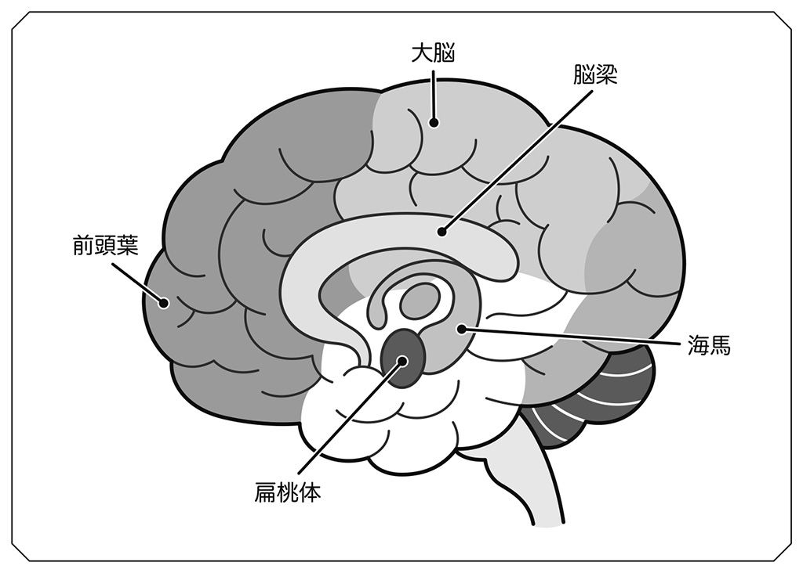
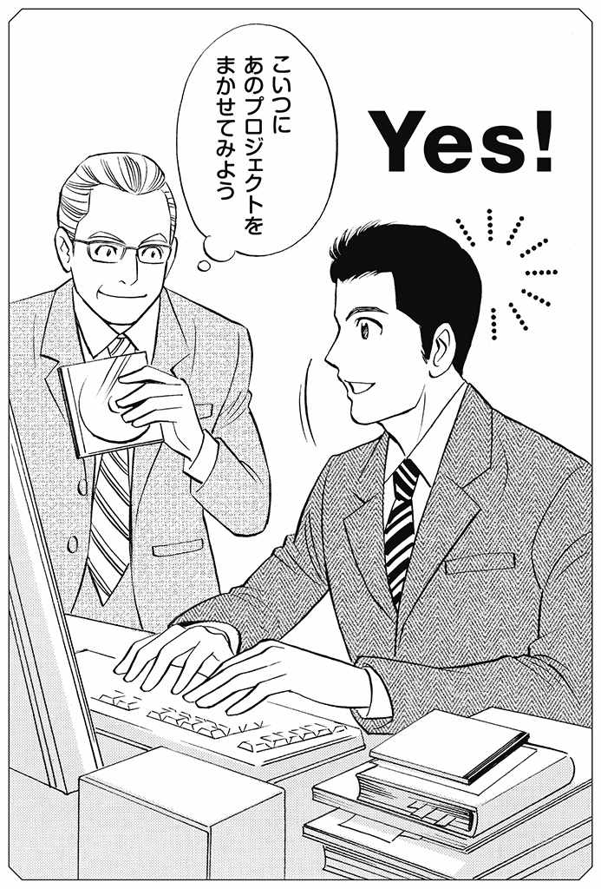
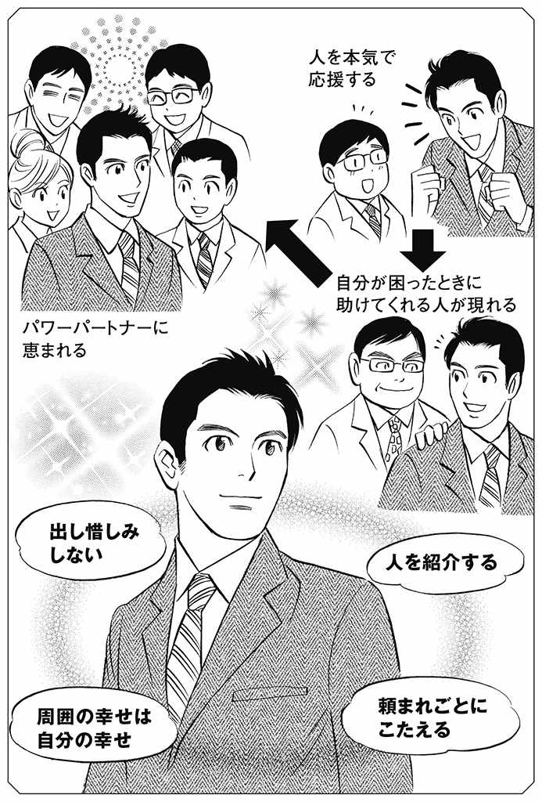
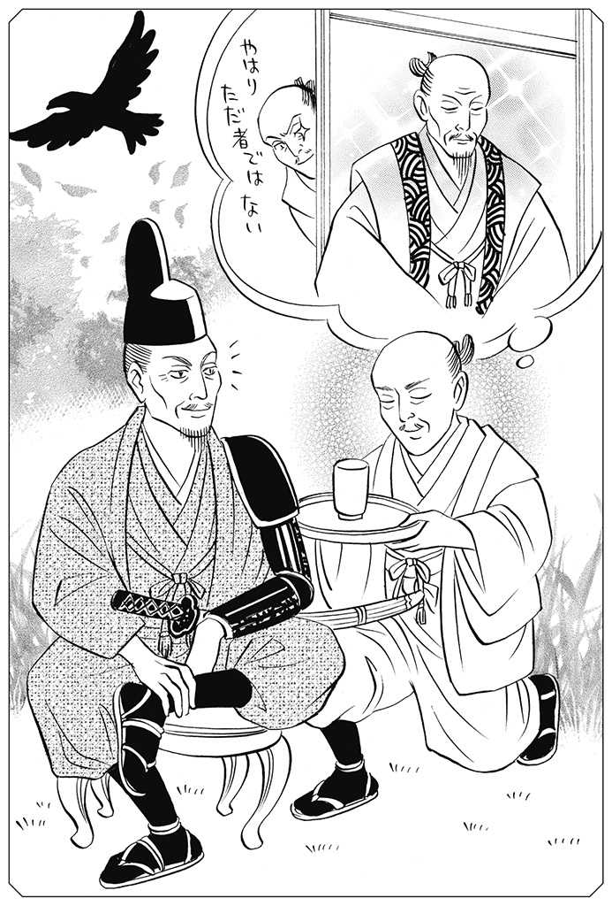
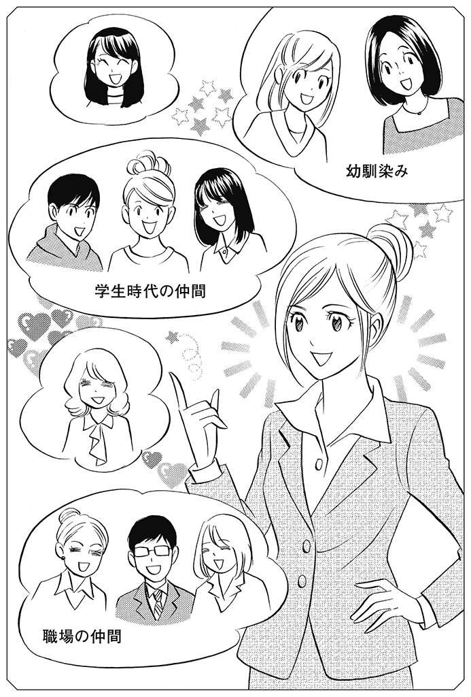
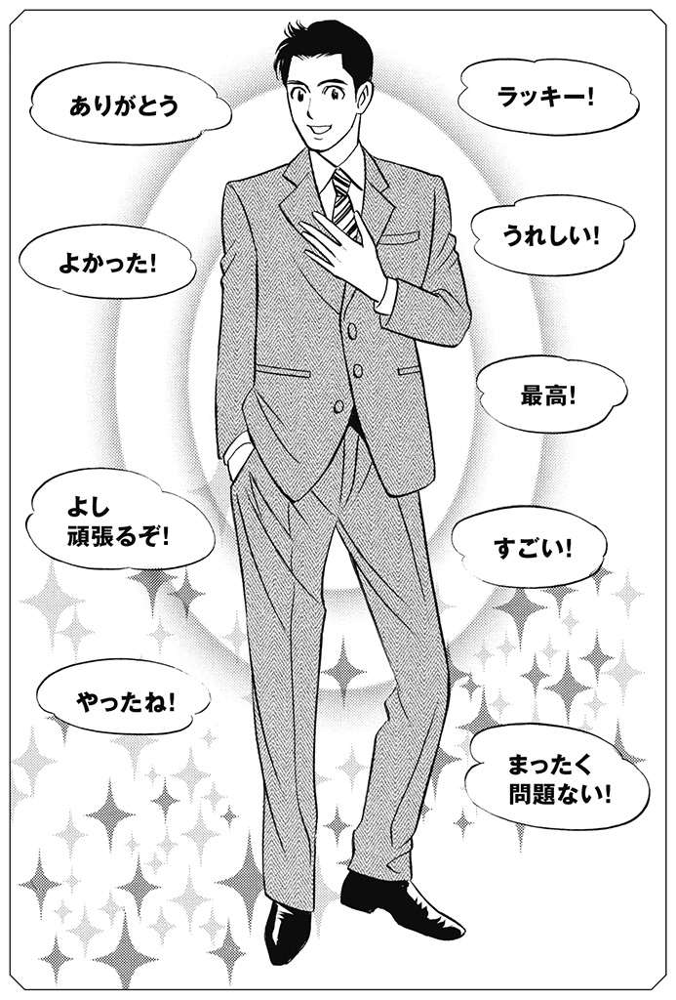
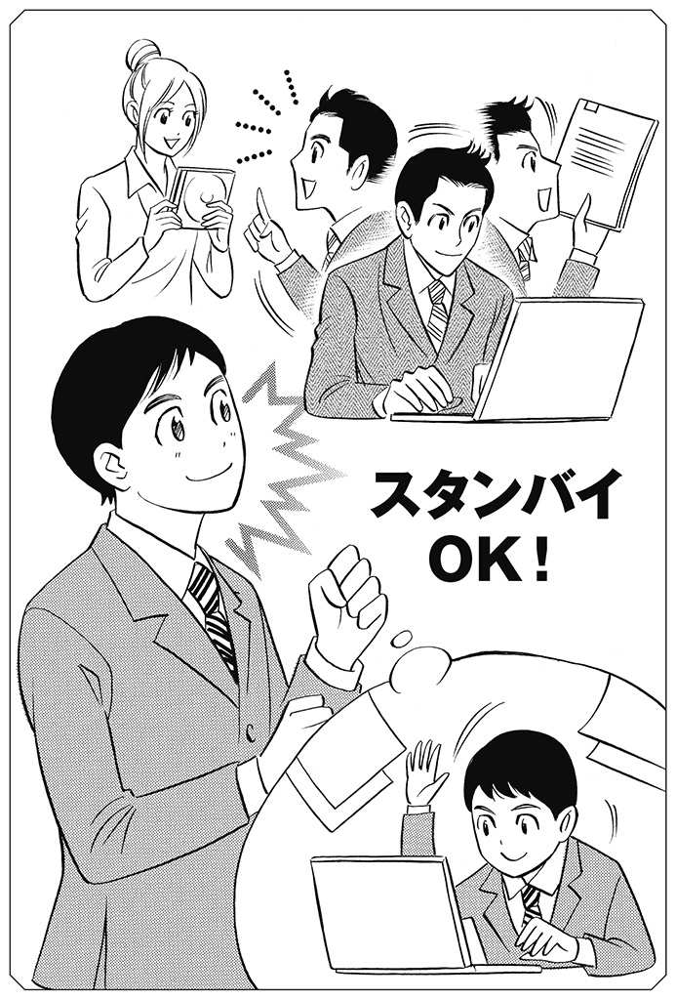
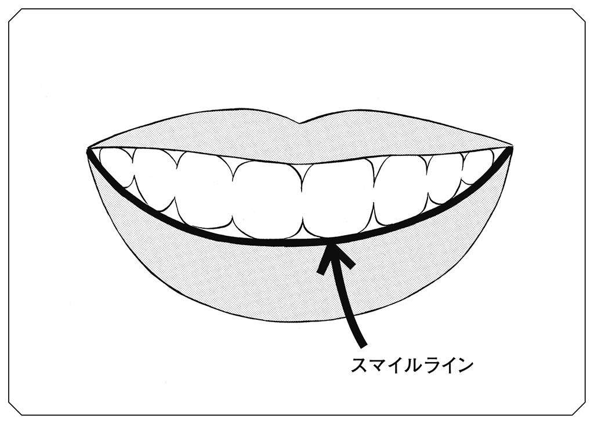

| すりへった心を満たして「最高の人間関係」でいられる本 | |
| 井上 裕之 | |
| (2013) | |
すりへった心を満たして
「最高の人間関係」でいられる本
井上裕之
Hiroyuki Inoue
本書を亡き父、井上和弘に捧ぐ。
本書は私の22冊目の本にあたります。
既に私の本を読んでくださっている方々にはお馴染みの話ですが、私は歯科医師です。１９９４年、31歳のときに北海道の帯広で開業し、これまでにたくさんの患者さんと向き合ってきました。
周知のように歯科医師の仕事は歯を治療することですが、実は歯の治療を始める前に大切なことがあります。それは患者さんの身体的な健康状態をはじめ、仕事、家庭環境、経済状態や価値観などのバックグラウンドを把握すること。どのくらいの期間、どのくらいの予算で治療を行うのがいいのか、その方に適した治療法を探るためです。
けれど私が最も重要視しているのは、信頼関係を培うことなのです。
信頼関係が成立していなければいい治療をすることはできません。たとえばキャンセルが続く患者さんに対して「ルーズな人だな」と腹を立て、「キャンセルばかりされては困ります！」などと言えば、その方は治療を断念してしまうか、もしくは歯科医を変えてしまうでしょう。
一方、私があらかじめ、この患者さんは子育てをしながら働くシングルマザーで、おまけに親の介護もしているといった事情を知っていたら、「大変ですね。できる範囲で治療を続けていきましょう！」と声をかけることができます。すると患者さんは更に心を開いてくださる。実際に「治療の前に少しだけお時間をいただけますでしょうか？」と言われ、うまくいかないお姑さんとの関係や夫婦問題、上司とのトラブルなどの相談を受けることも珍しくありません。
つまり私はまず、患者さんとハグした状態を頭の中に思い描き、「先生、私を理解してくれてありがとう」「どういたしまして」という関係性のベースを築き上げたうえで、「私の歯科医師としての話を聞いてくれますか？」と切り出すのです。
そうすれば、私の治療に対する考え方を患者さんは見事なほど的確に受け止めてくださいます。この状態に持っていくことで、初めてタッグを組んで治療に取り組むことができるのです。
さて、ここで注目していただきたいのが「キャンセルばかりされては困ります！」という怒りの感情が、「大変ですね。できる範囲で治療を続けていきましょう！」といういたわりの感情へと変容する経緯。相手を理解し、受け入れることができれば人間関係は画期的に変わります。
こうした人間関係の本質をできるだけわかりやすく説明することはできないだろうか？ そう考えたことから本書は生まれました。
より深く理解していただくために
自分のスタイルで歯科医師という仕事に取り組んでいた私に、大きな転機が訪れたのは２００８年。「いのうえ歯科医院は歯医者さんだけれど、心の治療院でもある」といった評判が広がり、『自分で奇跡を起こす方法』という本を出したところ、10万部を超えるベストセラーとなったのです。それ以降、全国の人から手紙やメールでの人生相談が寄せられるようになり、おそらく６万人を超える方々の相談に対してお答えしてきたのではないかと思います。
この経験から私は、多くの人が家族や友人、職場の仲間など、人生において避けては通れない人とのかかわり合いを通じて深い悩みを抱えていることを知りました。それと同時に人間関係によるストレスがどれほど大きなものであるかを熟知するに至ったのです。
けれどもその半面、人間関係による摩擦は、どちらか片方だけが百パーセント悪いということはないと確信しているのも事実。相談内容は常に相談者の視点で語られる一方通行なものであることから、ともすれば同情してしまいがちですが、必ずしも相談者が被害者であるとは限らない。むしろ相談者本人に問題があると感じるケースがほとんどなのです。このことに気づいていただきたいという思いから本書は少々辛口なものとなりました。
また、円滑な人間関係を築くうえで重要なポイントとなる考え方については、あえて同じことを随所にちりばめて記しています。セミナーなどでも「知っている」と「やっている」の間には大きな隔たりがあると話しているのですが、知識を行動に移すのは誰にとっても容易なことではありません。せっかくの知識を日常生活で実用化するためには、何度でも同じことを繰り返し聴いたり読んだりすることで心に刻み、考えるより先に実践するというレベルにまで持っていく必要があるのです。
この本の主役はあなた
そのことを理解していただいたうえでもうひとつ、お伝えしておきたいことがあります。それは本書に記した数々のフレーズや法則の中から、ぜひ、自分の心の軸を見つけてほしいというもの。軸というのは目的、ミッション（使命）といった意味です。ちなみに私自身は「後悔しないように生きる」という軸を掲げ、目の前の人に誠意を尽くすことを常に心がけています。
私の場合、最善を尽くさなければ後悔することになるという思いに突き動かされるようにして患者さんの治療を行い、力を惜しんで後悔したくないという思いが人生相談や執筆活動、講演活動の原動力となっているわけですが、「後悔しない生き方をしよう」という心の軸を持つようになってから、人間関係も驚くほど改善されました。
仮に、私が親友と意見が食い違い、心がザワザワしていたとしましょう。そんなときにも「後悔のないように生きるために自分はどうするべきなのか？」と自問自答します。すると「こんなことで意地を張って親友を失いたくない」と冷静さを取り戻し、おのずと相手に対する自分の言動が決まるといった具合。後悔したくないから親孝行をしよう、後悔したくないから大切な身内や職場の仲間ときちんと向き合おう......。私にとって「後悔しないように生きる」は、まさに魔法の言葉なのです。
とはいえ、自分の生き方や人間関係に影響を及ぼす魔法の言葉は人によって違います。そもそも人間関係の在りようはひとつではない。あなたの性格や相手の性格、育った環境による価値観の違いや関係性によって、何が快適な人間関係かという定義は異なってきます。しかも、あなたと他者との関係性は時間とともに移ろうため、これが正解だというものなどないのです。
ですから本書で私が説いているのは、あくまでもヒントであり、これさえ実践すれば救われるといったものではありません。大切なのはヒントを活かして自分なりの人間関係を確立しようという応用力と、明日からでも実践してみようという行動力です。そのことをどうか忘れないでください。
この本の主役はあなたです。主役であるあなたとマンツーマンで向き合った私が、あなたの人間関係における悩みに耳を傾け、多方面からアドバイスをするというイメージで読んでいただきたいと考えました。本書がストレスのない充実した人生を送るための大きなきっかけとなることを、心から祈っています。
CHAPTER
Ⅰ潜在意識コミュニケーションのすすめ
CHAPTER
Ⅱすべて潜在意識が解決してくれる
ＳＴＥＰ１◆思い込みを手放す
ＳＴＥＰ２◆自分の軸を持つ
ＳＴＥＰ３◆相手を受け入れる
CHAPTER
Ⅲ自動的に「いい人間関係」を引き寄せる10のアクション
１ ＹＥＳの返事はすぐにする
２ 相手を全否定しない
３ 人を本気で応援する
４ サービス精神を発揮する
５ 価値観のキャパを広げる
６ 質のいい人を見極める
７ 自分を褒める
８ 自分の周囲を「いい言葉」で埋め尽くす
９ いつもスタンバイしておく
10 「スマイルライン」を意識する
CHAPTER
ⅣＱ＆Ａで学ぶ潜在意識活用術 ～仕事編～
Ｑ１ 「自分より年上の部下」とうまくコミュニケーションが取れない。
Ｑ２ どうしても許せない上司がいる。怒りで感情が爆発しそうだ。
Ｑ３ 引っ込み思案な性格で、職場に溶け込むことができない。
Ｑ４ 会社の業績が悪化し、リストラなどで職場がギスギス。疑心暗鬼になっている。
Ｑ５ 携わっているプロジェクトは船頭が多く、板挟みになってウツになりそうだ。
Ｑ６ ズル賢くて要領のいい同僚が先に出世して、努力型の自分がひたすら虚しい。
Ｑ７ 四角四面な上司・同僚に囲まれて息がつまりそうだ。
CHAPTER
ⅤＱ＆Ａで学ぶ潜在意識活用術 ～友人関係編～
Ｑ１ プライドが高く傲慢な友人に翻弄され、苦しんでいる。
Ｑ２ 嫉妬から友達に悪口を言われ困っている。
Ｑ３ 結婚し、お母さんになった同級生たちと自分を比べて落ち込んでいる。
Ｑ４ ネガティブな発想の友人がいて、エナジーを吸い取られそうだ。
Ｑ５ フェイスブックにアップした記事が友達の批判の対象になってしまった。
CHAPTER
ⅥＱ＆Ａで学ぶ潜在意識活用術 ～家族編～
Ｑ１ 「母の呪縛」に苦しんでいる。
Ｑ２ 夫のモラハラで夫婦関係が悪化している。
Ｑ３ きょうだいが鬱病にかかり、家庭内の空気が重苦しい。
Ｑ４ 親の遺産を巡り、骨肉の争いに......。
Ｑ５ 妻が自分の仕事に理解を示してくれないのが不満。
Ｑ６ 子どもが何を考えているのかわからず不安だ。
CHAPTER
ⅦＱ＆Ａで学ぶ潜在意識活用術 ～ＬＯＶＥ編～
Ｑ１ 前の恋人が忘れられず、新しい恋をする気になれない。
Ｑ２ 交際相手との価値観の違いが気になり、結婚に踏み切ることができない。
Ｑ３ 交際歴が長く、マンネリな関係になった相手と結婚するのはいかがなものか？
Ｑ４ なぜだか知らないが、いつも恋愛相手にフラれてしまうのだが......。
Ｑ５ 相手を探すのは億劫だが、どうしようもない孤独感に襲われる。
あなたに限らず、思うようにいかない人間関係に悩んでいる人は大勢います。それもそのはずで、友達に貸したお金が返ってこないという悩みも、職場の上司に評価されないという悩みも、いい医師が見つからないという悩みも、掘り下げて考えていけば、その根本は人間関係にあるのですから。
あなたの周りにはどんな人がいますか？ ここでいったん、本書から目を離してじっくりと思い描いてみてください。
育ててくれた親、一緒に育った兄妹のほかにも、配偶者、子ども、親戚、親友、友達、恩師、恋人。さらにママ友、職場の人たち、取引先の人たち、同じ地域に暮らす人たち、趣味を通じて知り合った人たちを思い浮かべる人もいることでしょう。私たちは望むと望まないにかかわらず、実にたくさんの人とのかかわり合いのなかで生きているのです。
すべての人に感謝することができれば問題はないわけですが、人に感情というものがある以上、さまざまな摩擦が生じます。理不尽なことを言われて素直になれなかったり、相手の傲慢な態度に意固地になったり、心ない一言に傷ついたり......。これまで私が相談を受けた方のなかには「どうして自分は人とうまくつき合うことができないのでしょうか？」と涙ながらに訴える方も少なからずいました。でも焦ることはありません。この本で一緒に解決策を探っていきましょう。
それにしても気になるのは、あなたがずいぶんと長いあいだ、ひとつの悩みを抱えていることです。もちろん人生の中で問題が起きたときに「どうしたらいいのだろう？」と考えることは大切。一歩を踏み出すときに迷いが生じるのも当然のことです。
ただし悩みには前向きな悩みと後ろ向きな悩みがあると私は思います。前向きな悩みは行動とセットになっていますが、後ろ向きな悩みには行動が伴わない。冷たい人だと思われてしまうかもしれませんが、あなたが後者である場合、私は同情できません。そうした人に「なぜ悩みから抜け出すことができないのでしょうか？」と聞かれたら「行動しないからですよ」ときっぱりと答えるでしょう。
悩み続けることは不毛です。どれほど悩んでも行動に移さなければ問題は解決しないのです。それなのに長いあいだ同じことをグルグルと思い巡らせては「どうしよう、どうしよう」とうろたええ、嘆くばかりで一歩も踏み出せずにいる人は、人生の大切な時間をいたずらに過ごしています。
では、なぜ悩み続けるのかといえば傷つくのが怖くて問題を先送りにしているから。もしくは現状を受け止めていないから。その証拠にあなたは「でも、あの人が......」「だってあの人が......」と思っていませんか？ もしそうだとしたら、そんな思いはただちに手放すべきなのです。そして自分を省みることに集中していただきたいと思います。
現状を変えるためには、相手に対するアプローチを変える必要がある。そのことはわかっているのに、どうすればいいのかわからないという方に、私はいつも、こう尋ねます。「ところであなたは自分のことをどれくらい知っていますか？」と。
私のプログラムである「ライフコンパスセミナー」でも、まず最初に自分を知るということを徹底的にやっていただきます。自分の強みと弱みについて、自分の好きな人と嫌いな人について、自分の好きなことと嫌いなことについてなど、その理由も書いて自己分析していくのです。すると自分が思っているより自分は粘着気質だとか、自分勝手だとか、寂しいと思っていたけれど元来一人が好きなんだとか、いいことも悪いことも含めていろいろな発見が必ずあります。
そこまでしないと自分のことはわからないという話なのですが、忙しい日常生活の中では自己分析しようという発想には至らないものです。とはいえ自分を知らずして、人間関係の何をどう改善できるというのでしょうか。それはただ、一方的に相手が悪いのだから相手に言動を改めてもらいたいと言っているのと同じこと。そういう方には、精神科医、エリック・バーン博士の「他人と過去は変えられないが、自分と未来は変えられる」という言葉をお伝えしたいと思います。
多くの人が人間関係は自分と他者との問題であると考えていますが、それは間違い。すべては自分の問題です。人間関係をよくするのも自分なら、悪くするのも自分。そこでまず、人間関係の悩みから脱出できるか否かは自分次第であるということを強く心に刻んでください。
いかに理不尽な問題であっても相手のせいにするのではなく、自己責任でもって対処する。これが人間関係を好転させるための極意なのです。
私がこの本で説く人間関係の悩みを解決するためのアドバイスは、すべて潜在意識の法則に基づいています。
潜在意識については特に説明する必要はないかもしれません。自己啓発や成功の法則に関心のある方ならご存じのはず。「引き寄せの法則」も潜在意識を説いたものです。でも、もしもあなたに潜在意識に関する知識がまったくなかったら、第二章から始まる私のアドバイスを理解していただくことが難しくなってしまいます。そこで潜在意識について簡単に説明しておきましょう。
私たちの意識は、顕在意識（意識）と潜在意識（無意識）に分かれています。意識というのは表層的な部分、無意識というのは意識の奥に潜んでいるもうひとつの意識のことです。あなたは誰かとの出会いがあって「この人と親しくなりたい！」と思ったときに、「だからといって調子に乗るな」と言動にブレーキをかけるような内なる声のささやきが聞こえたという経験はありませんか？ この内なる声の正体こそが潜在意識。人は顕在意識と潜在意識という両方の意識によってコントロールされているのです。
このことにいち早く着目したのは心理学者のジークムント・フロイトです。フロイトの研究により、潜在意識が私たちの行動、思考、意思決定に大きな影響を及ぼしていることが解き明かされました。
それを受けて潜在意識に関する見解を深めたのは心理学者のカール・グスタフ・ユング。ユングが人間の意識を氷山にたとえて「顕在意識は海の上に顔を出している部分にすぎない」と言ったのは有名ですが、つまり私たちの意識の大部分が潜在意識によって構成されていると定義づけたのです。
更にユングは、「潜在意識は記憶の貯蔵庫である」としましたが、ここでいう記憶というのは私たちが経験した過去の記憶だけではなく、宇宙が創造されて以来、先祖代々受け継がれてきた人類に共通する記憶を意味します。詳しくは拙著『わたしの人生に奇跡を起こした マーフィー１００の言葉』『Ｊ・マーフィーの教え 最高の自分を引き出す法』に記していますので、ぜひ読んでみてください。
いずれにしても私たちは「潜在意識＝記憶」に支配されて生きているのです。いい記憶を引き出せばポジティブな行動につながり、悪い記憶を引き出せばネガティブな行動へとつながってしまう。
たとえば「自分は誰とでもうまくつきあえる」という人は、誰とでもうまくつき合えるという過去の記憶から生まれた思考が活かされているのです。そして「自分は誰とでもうまくつき合える」と思ったり言ったりした途端に、それは新たな情報として潜在意識に伝達されます。
すると意識は自動的に「人ともっとうまくつき合うためにはどうしたらいいのだろう？」と働き始め、記憶の中の情報を集め、ひらめきというかたちで私たちに知らせてくる。「メールしてみよう！」と思い立つといったことだけでなく、連絡しようと思っていたら相手から連絡が来たといったシンクロニティ（偶然の一致）も起こります。
つまり、これは引き寄せの法則です。
この場合、ひらめきは潜在意識からのギフトだと言えるわけです。そのひらめきを得て社交的な人はますます社交的になっていきます。
一方「自分は人間関係が苦手だ」という人は、人間関係が苦手だという記憶から生まれた思考を生きているのです。「人間関係が苦手だ」と思ったり、口にしたりした途端にそのネガティブな思いは最新情報として潜在意識に伝わります。すると自動的に意識が働き始め、過去の記憶からトラウマを引き出してくる。その結果、傷つきたくないというおそれや猜疑心、嫉妬心や被害者意識など、ネガティブな感情に心が支配されてしまいます。
この場合、潜在意識からのひらめきは悪魔のささやきだと言えるでしょう。ネガティブなスパイラルにハマったら最後、人間関係は悪化の一途をたどることになってしまうのです。
潜在意識には善と悪の区別はなく、とにかく感情をそのまま受け止めるというのが特徴。ですから大切なのは、潜在意識にポジティブな発想で働きかけること。本書では潜在意識との共同作業を意味する潜在意識コミュニケーションを活かして快適に生きていくための具体的なアドバイスをしていきますが、人間関係に悩んでいるあなたは、とにかくネガティブな発想を手放すことから始めましょう。
ネガティブな発想があなたの運命を確実に悪い方向へと誘っていくというメッセージを伝えたものに、マザー・テレサの、「思考に気をつけなさい」という言葉があります。
思考に気をつけなさい
それはいつか言葉になるから
言葉に気をつけなさい
それはいつか行動になるから
行動に気をつけなさい
それはいつか習慣になるから
習慣に気をつけなさい
それはいつか性格になるから
性格に気をつけなさい
それはいつか運命になるから
これが人間の法則です。耳が痛いという声が聞こえてきそうですが、一方で希望でもあります。逆説的に捉えれば、ポジティブな発想を持ち、いい言霊の言動を心がけ、積極的に親切に接していれば、それはやがて優しさや犠牲的精神、利他的精神となって心の中に定着する。愛に溢れた人は、豊かな人生を送ることができるということなのですから。
たとえあなたが、今は人間関係の暗闇の中にいたとしても大丈夫。
未来を変えることはいくらでもできます。人間の法則、宇宙の法則ともいうべき潜在意識の法則を活用し、ストレスのない充実した人生を手に入れることは誰にでもできるのです。
ここまででは潜在意識がどういうものかについてお伝えしてきました。次に潜在意識の使い方へと駒を進めていきましょう。
フロイトやユングの功績は非常に大きなものですが、潜在意識を一般に広く知らしめたのは、ジョセフ・マーフィーという１００年ほど前に牧師として活動していた人物です。
マーフィーは潜在意識に、
●人は誰にも無限の可能性が与えられている
●その無限の可能性を引き出す回路は潜在意識である
●現実は自らの思いがもたらした結果である
という心の法則を見いだしました。そして「潜在意識を学べば、どんな思いでも、それが真摯なものであるならば、必ず思いどおりに実現するのです」と説き、潜在意識の活用法を講演や著書を通じて具体的に示したのです。
なかでも『眠りながら成功する』という著書は大ベストセラーとなり、このことによって潜在意識は多くの人の知るところとなったとされています。
「すべての人は思いどおりに生きています。もし、今の現実がけっして思いどおりではないというなら、思い方、願い方が間違っているのです」
「ただ、素直にこうありたいと願う。それが現実になると信じる。それがすべてです。それだけで願いは必ず現実化します」
と説くマーフィーの法則に多くの人が希望を与えられました。けれども、ここには大きな落とし穴があると私はとらえています。それは人々が「マーフィーの法則は、ただ願うだけで、何の努力もなく夢を叶えてくれる魔法の法則だ」という誤った解釈をしてしまいがちだということ。
先に私はマーフィーの「潜在意識を学べば、どんな思いでも、それが真摯なものであるならば、必ず思いどおりに実現するのです」という言葉をご紹介しました。実はここにある「真摯なものであるならば」という箇所が大切なのですが、人々のご都合主義的な解釈によって、抜け落ちたまま浸透してしまう危険が考えられるのです。
「真摯なものであるならば」というのは、真面目であるならば、ひたむきであるならば、誠実であるならばと言い換えることができると思いますが、私は「本気であるならば」と解釈しています。潜在意識が思考と行動を支配すると説くマーフィーの法則は、本気であるならば潜在意識の作用によってもたらされた発想を無駄にすることなどないはずだと伝えている。私はそう確信しています。
考えてみてください。あなたが「あの人と恋愛したい」と考え、自分が意中の人と恋愛をしているイメージを描きながら強く願ったとしても、何のアクションも起こさないままボーッと部屋で過ごしていて、果たして夢が叶うでしょうか？
そんなことはあり得ません。意中の人に好意を持ってもらうために自分を磨き、勇気をもって恋愛に挑む。そうなって初めて恋愛を成就させたいというあなたの夢は叶うのです。なりたい自分を夢見て本気で努力をする過程にこそ生きる喜びがあり、その喜びを享受するために人は生まれてくる。それこそがマーフィーの法則の神髄だと言っていいでしょう。
人が生きていくうえで、結果だけにフォーカスしないことが大切なのです。恋愛にしても結果を問えば結婚するか、別れるかにこだわることになりますが、大切なのは相手と出会い、どう向き合ったかなのではありませんか？ 幸せな思い出があるならば、どういう結果を迎えたとしても無駄な経験ではないはずです。
ましてや人はあらかじめ「死」という結末を迎えることがわかっているシナリオを生きているのです。人生は経過がすべて。ですから老後が心配だ、孤独な死を迎えるのが怖いと思い悩む暇があるのなら、今日を精一杯に生きるべきだと思います。精一杯に生きた毎日の積み重ねが精一杯に生きた人生になる。瞬間の延長線上に未来があることを忘れてはいけないのです。
人間関係も同じです。
今、目の前にいる人に誠意を尽くす。
愛する人に「あなたは自分にとって大切な人だ」と伝える。
できることがあるなら、たとえ自分に何の得がなくても気持ちよく引き受ける。
そうして結果は未来に委ねればいいのです。日本には《人事を尽くして天命を待つ》という素晴らしい言葉があります。繰り返しになりますが、大切なのは結果ではなく、何をしたかです。
明確な目的＋行動力＋潜在意識＝人間関係の好転＝幸せ
この方程式を心にしっかりと刻んでいただきたいと思います。
マーフィーの法則を「ただ願うだけで、何の努力もなく夢を叶えてくれる魔法の法則だ」という誤った解釈をしてしまう人がいる一方で、潜在意識の存在をはなから信じようとしない人もいます。潜在意識が「宇宙のエネルギー」「無限の力」「インナーチャイルド」といった異名を持つからでしょう。目に見えないパワーの存在など信じないというわけです。そうした人は異口同音に「私は現実主義者なので」と言いますが、潜在意識は科学的に証明されている超現実的な世界です。
とはいえ、かくいう私も長いあいだ潜在意識の存在を無視して生きていました。信じる信じないということ以前に、存在さえ知らなかったのです。なにしろ医学書以外は読んだことがありませんでしたから。
私が精神世界の本を初めて手にしたのは30代のある日のこと。当時の私は、自動車事故で家族が瀕死の重傷を負うという人生最大の試練に見舞われていました。自分を立て直すためのすべを求めて書店へ足を運び、わらにもすがる思いで手にしたのが成功法則の祖といわれるナポレオン・ヒルの『思考は現実化する』という一冊でした。そこから何かに導かれるように自己啓発に関する本を読むようになり、マーフィーの本と出会ったのも、その流れのなかでのことです。
もともと学ぶことが好きだったこともあり、その後も自己啓発セミナーや研修会に参加し、潜在意識に対する造詣を深めました。そんななかで医師としての新たな目覚めを迎えます。それは医学に力を注ぐことと、患者さんの心にアプローチすることの二本立てで治療にあたらなくてはいけないというもの。
歯の具合が悪いと訴える患者さんを診察してみたところ、これといった異常はないというケースが珍しくありません。そのとき「異常ありませんよ」と告げるのは簡単です。けれど私は患者さんが病院に足を運ぶというのはよほどのことだと考え、何が原因なのだろう？と探る必要があると考えています。もはや、エックス線写真の結果や検査結果を示すデータだけですべての判断はできません。
患者さんと向き合ううえで武器になるのは人間力だけです。ストレスから歯や歯肉に不快な感覚を覚えるというのはよくあることですが、そうした方の話を傾聴し、潜在意識というフィルターを通してアドバイスをすることで、ほとんどの方が笑顔を取り戻します。
もっとも医学と精神世界が対極的に位置しているのかといえば、そんなことはありません。
かつて人間という存在は「物体」であると捉えられていましたが、現在、量子力学の世界では人間も「物質」であり、エネルギー体であると考えるのが主流となっています。
人間も含めたすべての物質は原子によって構成されていて、原子を細分化すると素粒子になる。素粒子はエネルギーによって波動しているということが解明されています。つまり宇宙に存在し、事象化されているものは、すべてエネルギー体だということ。人間は肉体という物体とエネルギーが重なり合って存在しているわけですが、このエネルギーを「魂」「生命」そして「潜在意識」と言い換えることができるのです。
エネルギーだから時空間を超え、人はエネルギーという目に見えない世界を共有する。最近になって頻繁に耳にする「言霊」という言葉は、言葉には魂がこもっているというものですが、言葉もエネルギーだからこそ人の心に届くのです。
また脳科学の見解から潜在意識の法則を解明することもできます。
人の脳の９割を占めている大脳は、「前頭葉」「頭頂葉」「後頭葉」「側頭葉」に分かれていて、更に「前頭連合野」「側頭連合野」「頭頂連合野」の３つの連合野と「運動野」「体性感覚野」「聴覚野」「視覚野」がそれぞれの役割を担いながらまとまって位置しています。あらゆる機能は大脳に総括されている。つまり私たちは脳の支配を受けながら生きているのです。
人の心を複雑にしているのも脳です。人の感情が脳の中でどうやって生まれるのかを考えるうえで重要なのが、右脳と左脳をつなぐ「脳梁」の存在。たとえばあなたが誰かと出会って好感を抱いたとしましょう。この場合、第一印象で好感を持つというところまでは右脳で処理しますが、「なぜ好感を持ったのか？」と分析するのは左脳であり、右脳と左脳のどちらが欠けても感情にたどり着けません。人は外部から入ってきた情報を受け止め、海馬から記憶を引き出し、脳梁を介して右脳と左脳の情報交換を促した結果、最終的には大脳辺縁系にある「扁桃体」で「この人が好きだ」と判別するのです。
先に私は「潜在意識は記憶の貯蔵庫である」とお伝えしました。けれども海馬＝潜在意識というわけではありません。記憶は印象の薄いものや忘れてもいいものと、インパクトの強いものや忘れてしまっては困るものとに大別されるのですが、海馬は短期記憶とするか長期記憶とするかを判断するまで記憶を保管するための倉庫。海馬が重要な記憶であると判断した記憶は、大脳新皮質の「側頭葉」に長期記憶として貯蔵されるのです。

あなたが「対立しているお母さんと心を通わせたい」と考えていたとして、そのことを強く願い、お母さんと談笑している様子を思い描くことで海馬を刺激すると、海馬が重要な情報であると判断を下して、長期記憶に保管します。重要な情報であると判断されたイメージは、脳の中でインパクトのある記憶であると認識されるのです。脳科学の世界では、感情は行動の源であり、すべての行動は感情にもとづくと捉えています。お母さんと対立していて寂しいという感情を情報として受け止めた脳は「お母さんと心を通わせるためにはどうすればいいのだろう？」と考え始め、食事に誘って話し合ってみよう、手紙を書いてみよう、自分の態度を改めてみようといったひらめきを得て行動へと移すわけです。そしてここからが大切なところなのですが、脳はあなたが心に描いたお母さんと談笑しているイメージを、実際に起きたことの記憶であると認識しているため、現実の世界で具象化されやすいのです。
潜在意識はエネルギーであり、側頭葉に保管された長期記憶の役割も同時に担っているということを理解していただけたでしょうか？ 量子力学や脳科学の分野で近年になって解き明かされた人間の神秘と１００年も前にマーフィーが説いた理論とが合致しているというのは驚異的なことですが、いずれにしても「信じる者は救われる」の言葉どおり、騙されたと思ってやってみることが大切。人間関係をも含めた人生を好転させるために最も大切なのは素直であることだと私は思います。
第二章では「人間関係の悩みから脱出するためには？」がテーマです。
ポイントは、すべて自分の問題であると捉えること。
ここであなたが自分の周囲の人たちと一緒に同じ部屋にいる様子を思い浮かべてみてください。
今は部屋の中は真っ暗です。そこであなたはポケットから懐中電灯を取り出してスイッチを入れました。
照らされるのは自分だけですか？
そうではないでしょう。部屋中が暗闇から一変して、ほのかではあっても明るさに包まれたはず。
ところがしばらくすると電池が切れて懐中電灯の光が消えてしまいました。すると部屋は再び真っ暗闇になり、どこに誰がいるのかさえ判別することができなくなってしまいました。
これが人間関係というものです。懐中電灯の光は「愛」。人間関係に悩むあなたの懐中電灯はエネルギーが切れている状態だといえます。だからといって他の人の懐中電灯をあてにしたり、「なぜ懐中電灯を持っていないの？」などと他人を責めたところで問題は解決しません。自分の懐中電灯をチャージしたほうがずっと早いし、なんといっても安心です。
そんなことはわかっているとあなたは思うかもしれませんが、それならなぜ行動を起こさないのですか？
それは他人より自分が大切だからなのではありませんか？
もう一度言います。誰かが電気で部屋を明るくするのを待っている時間は不毛。そこで「自分が変われば相手も変わる」という人間関係の法則をベースに解決法を考えていきましょう。
潜在意識を活用して人間関係の悩みから脱出するために重要なスリーステップがあります。
ＳＴＥＰ１ 思い込みを手放す
ＳＴＥＰ２ 自分の軸を持つ
ＳＴＥＰ３ 相手を受け入れる
このうちのどれかひとつでも欠けていては完璧であるとはいえません。それぞれについて細分化しながら解説していきますので、できることから始めてください。ベビーステップで構いませんので、ぜひ実践していただきたいと思います。
運命のせいにしていませんか？
人間関係に悩む人の相談を受けているときに頻繁に出てくる言葉があります。それは「運命」という言葉。「私は家族とは縁がない運命なんです」「私は結婚できない運命なのでしょうか？」「運命は皮肉ですね。意気揚々と入った会社で上司と反りが合わないなんて」......。
そうした方はそれが自分の運命だから諦めるというのではありません。諦めることができないから悩んでいるのです。そのことから私は、悩んだ末に導き出す運命論は自分に対する言い訳にすぎないと分析しています。
本当はできることがあるのに、勇気がなくてできない自分に嫌気が差しているのかもしれません。いろいろと手を尽くしたつもりなのに、空回りする人間関係に疲れているのかもしれません。相手の心ない言動に呆れて、ふてくされているのかもしれません。いずれにしても心がフリーズしている状態。そんな自分を認めたくないから運命のせいにしてお茶を濁しているのではないでしょうか。
もしもあなたが運命はあらかじめ決まっているものだと考えているとしたら、それはとんでもない思い込みだと私は思います。運命は自分の力で切り拓いていくもの。未来は今をどう過ごすかでいくらでも変えることができるのです。
これは多くの方と向き合ってきた経験から確信していることですが、人間関係がうまくいかないことの原因を探っていくと、必ずといっていいほど姿を現すのが「思い込み」なのです。「言わなくてもわかるはず」「こうあるべきだ」はご都合主義な思い込み。「自分はバカにされている」「私はいじめられ体質だ」は被害妄想による思い込み。「やってくれると思ったのに」「愛されると思ったのに」「感謝されると思ったのに」といった期待も自分勝手な思い込みにすぎません。
思い込みには根拠がない。
いってみれば思い込みとは妄想です。
現実社会の中で、私の妄想ではこうだと人に押しつけたところで、あなたの妄想につき合っている暇はないと言われてしまうことでしょう。あなたが疎外感を抱いたり、裏切られたと感じたり、自分のことを理解してくれないと苛立ちを覚えたりするのは、すべて妄想という名の「思い込み」のためです。
相手と素直に向き合おうとするあなたの妨げとなっている感情も「思い込み」です。そればかりか「思い込み」は、潜在意識の法則によって現実化してしまいます。すでに現実化している場合には、ただちに「思い込み」を手放し、潜在意識を上書きしなければいけません。
思い込みを手放すためには、自分の感情を放置せず、この感情の動機は何だろう？ と掘り下げてみることが必要。そして「それは思い込みではないだろうか？」と自問自答してみてください。
ほんの少し、心の立ち位置を変えるだけで見える景色が変わります。そうなれば、自分はどうすべきなのかを見通すことができるはず。まっすぐな気持ちで自分を見つめ直すことが、人間関係を好転させることに直結しているのです。
あるとき、私が相談を受けた男性は、職場の上司に怒鳴られるのが苦痛でたまらないとのことでした。自分に落ち度があるならまだしも、上司は気分屋で昨日と今日では求められることが１８０度違うというのです。
これでは対処の仕様がありません。かといって生活がかかっているのですから、簡単に転職をすすめるわけにもいかない。なんとアドバイスしたらいいのだろうとしばらくのあいだ考えを巡らせていたのですが、ふと気になって「その上司はあなたにだけ怒鳴るのですか？」と確認してみたところ、「いいえ。誰に対しても怒鳴りまくるのです」という返事が戻ってきました。そうであったとしても不愉快なことに変わりはないのですが、それなら答えは簡単で適当に聞き流しておけばいいのです。
深刻なのは自分だけが目の敵にされているというケースだけ。誰にでも怒鳴る上司は誰に対しても平等な人だともいえるわけで、自分だけが怒鳴られないとしたら、むしろそのほうが不思議だというくらいに捉えれば楽になります。
ところが私のアドバイスを聞いても目の前の男性は暗い表情でうなだれたままでした。実は怒鳴られる状況を軽く受け流すことのできない事情を抱えていたのです。それは父親に怒鳴られ続けて育ったというトラウマ。上司に怒鳴られるたびに父親に怒鳴られていた当時のことが蘇り、仕事が手につかなくなるほど萎縮してしまうと打ち明けてくれました。
トラウマが原因で人間関係がギクシャクしてしまうという人は大勢います。
たとえば「友達ができない」と悩む人には親友に裏切られたという過去がありました。「結婚を申し込まれましたが、彼のことが信用できないんです」と悩む人は過去に交際相手の浮気が原因で別れたという経験がありました。「この人も自分を裏切るかもしれない」とはなから猜疑心を持って他者と対峙するのでは関係がうまくいくはずもありません。そのうえ、過去は過去、今は今だと気持ちを切り換えなければ、潜在意識の法則によってつらい過去の記憶を生きることになってしまいます。
人はそれぞれ違います。前の恋人が浮気をしたからといって今の恋人も浮気をするに違いないと考えるのは思い込み。もし今度も浮気をされてしまったとしたら、それは自分のトラウマという強い思い込みが引き寄せた現実なのです。
なかでも最も怖いのはトラウマを克服することなどできないという思い込み。二度とつらい思いをしたくないと思う気持ちはよくわかりますが、トラウマを克服するためには一歩前へ踏み出し、今度は大丈夫だったと確信を得るよりほかに方法がありません。トラウマはどんなに時間がかかっても、その人が自分自身で乗り越えていくことでしか手放すことができないのです。
人生には二通りの生き方しかない。
ひとつは奇跡など何も起こらないと思って生きること。
もうひとつは、あらゆることが奇跡だと思って生きること。
これは物理学者アルベルト・アインシュタインの言葉です。奇跡を信じ、勇気を持ってトラウマという思い込みと取り組んでください。あなたが心の中でダメだと諦めてしまっていたことを「もう一度トライしてみよう！」と決心したとき、希望に満ちた現実に向かって潜在意識の力は働き始めます。
「人間関係の悩み」といっても、人によって千差万別です。これまで受けた約６万人以上の方の悩みを大きく分類しただけでも夫婦問題、嫁姑問題などにおける不満や苛立ち、子育てに関する不安、親の財産を巡る兄弟間の骨肉の争い、仕事仲間との軋轢、隣近所とのいさかいなど、さまざまなものがあります。
更に同じ種類の悩みであっても、かかわる人の環境や性格、価値観などによって事情が異なってくるため、同じものはないのです。けれど私はどんな人間関係の悩みを抱えている人にも共通項があることに気づきました。
たとえば職場の同僚の中で自分だけが浮いていると悩んでいる人は異口同音に「友達はみんな楽しそうに働いているのに......」とグチる。
あるいは結婚できないかもしれないと焦りを募らせている人のほとんどが「どうして私だけが取り残されてしまったのでしょう」と嘆きます。つまり人と自分を比べることでいたずらに悩みを深刻化させているのです。
先日も「フェイスブックにはついていけません。僕の人生には自慢したいことがひとつもないのでヘコみます」と言っている人がいたのですが、フェイスブックにアップするのは生活の一コマであって、すべてではありません。華やかそうに見える人でも、つらいことや苦しいことはあるでしょう。１０００人の友達がいても、本当に困ったときに手を差し伸べてくれる友達はいないかもしれないのです。
いずれにしても楽しそうだというイメージに翻弄されて落ち込むというのは、あまりにも短絡的で、それこそ私にはついていけません。
「あの人はいいな」と思うところまではいいのです。けれど「それに比べて自分はどうなのだろう」というのは余計な発想。
ましてや「いいな」が「悔しい」「憎い」「妬ましい」などというネガティブな感情になっているとしたら最悪です。その感情が潜在意識に刻まれれば、その人は知らず知らずのうちに人の批判しかしない皮肉屋の人生を歩むことになってしまうことでしょう。すると類友の法則によって周囲に同じようなタイプの人が集まってくる。それは孤独な人生を意味します。
魔が差すと言いますが、いうなれば自己憐憫も嫉妬心も人を支配しようとする悪魔のワナ。「あの人はいいな」という感情には落とし穴があるということです。「自分だけが人間関係に苦しんでいる」も「活き活きとしているあの人には悩みがない」も、思い込みにすぎません。
悩んでいる人は自分の悩みを凝視する余り、視野が狭くなってしまうのが特徴。そのため「自分だけが苦しんでいる」と考えてしまいがちなのですが、人間関係は誰にとっても自分の思いどおりにはいかないものです。おそらく世の中のほとんどの人が他者から理不尽なことを言われても我慢したり、思いが通じていないと落胆しても何とか気持ちを立て直して生きているのではないでしょうか。
人と比べるのは、自分が自信を失っていることの表れ。自信があれば、「自分は自分、人は人」と割り切ることができます。そのことを認識し、人と自分を比べてタメ息をついたり、ネガティブな感情を募らせたりする暇があるのなら自分のことに集中しましょう。
「あの人のように社交家になりたい！」と思うのであれば、憧れの人に近づくための努力をすることです。カッコいい人や華やかな人は、努力の結果が表面化している結果なのですから。
そして少しでも目標に近づいたら自分で自分を褒めてください。そうすれば更に人と知り合うチャンスが増え、コミュニケーション力が磨かれていくはず。
くり返しになりますが、他者と自分を比べることは無意味。人は人、自分は自分だと認識してください。
結局のところ、人が本当に比べるべきは以前の自分と今の自分なのです。
雑誌を買って最初に開くのは占いのページだという人が多いそうです。あなたも年始におみくじを引いて一喜一憂しているのではありませんか？
実は私は運命学に関心を持ち、師範の資格を持っています。またバイオリズムを学んだメンタルセラピストでもあります。そうした勉強を通して確信しているのは、人には運のいい時と悪い時があるということ。百パーセント運のいい人生を送る人もいないし、百パーセント運の悪い人生を送る人もいません。
それは１年という短いスパンで捉えても同じこと。今年はいい年だと鑑定されれば心強いし、今年は注意の年ですと鑑定されればガッカリしますが、本当はいいことしかない１年も、悪いことしかない１年もないはずなのです。
ところが実際には、いい年だと言われた年は楽しい１年であり、注意の年だと言われた年はキツイ１年だったということが少なくありません。私はこのことも思い込みが潜在意識に伝達されたことによって引き起こす現象だと考えています。そこで自分の気持ちがアップするような鑑定結果だけを心にとどめ、悪い鑑定結果はさっさと忘れてしまうのが正しい占いとの関係だといえるでしょう。
最も悪いとされている運気も別の側面から見れば悪くないというのが常で、最悪の年と最高の年は表裏一体。美味しいジュースを飲んでいて「まだ半分も残っている」と思う人と「もう半分になってしまった」と思う人がいるように、運勢もその人の捉え方次第なのです。
このことは日常生活のあらゆることと共通しています。この世に起こるすべてのことはネガとポジの法則で成り立っているということです。
たとえば優しいことが決め手となってつき合い始めた人と、優柔不断だという理由で別れたというようなケースがありますが、相手が変ってしまったわけではなく、接する側の意味づけが変わっただけ。同様に野心家は強欲な人と表裏一体、マイペースな人は自己チュウな人と表裏一体だといえるのではないでしょうか。
このネガとポジの法則を逆手に取れば、人間関係の悩みも意味づけ次第でつらいことではなくなります。どう考えても人間関係の悩みは悩みでしかないと、あなたは思うかもしれませんが、それも思い込みです。
耳の痛いことを言う人は神様だと言います。
あなたのことを認めない家族は、あなたの欠点を知らせてくれる神様かもしれません。あなたのことを無視する職場の同僚は、あなたに人間関係について考えるチャンスを与えてくれた神様かもしれません。あなたのことを裏切る恋人は、あなたが本当に大切な人と出会ったときのために大切なことを教えてくれる神様かもしれません。
うまくいかない人間関係は、素晴らしい人間関係を築くためのレッスンであり、人間関係に悩む今こそ自分自身が変わるチャンスなのです。
あなたもご存じのように、振り子は一点で支えられたヒモやピアノ線などに重りをつけたもので、力を加えると重りが左右に揺れ始めます。左に振れたのと同じだけ右に振れるわけですが、この「バランスの法則」が私たちの人生にも働いているのです。
「ネガとポジの法則」のところで、百パーセント運のいい人生を送る人もいないし、百パーセント運の悪い人生を送る人もいませんとお伝えしました。人生においては得をすることがあれば損をすることもある。勝つこともあれば負けることもあります。私が他人のことを羨ましいと思ったり、自分と人を比べたりしないのはそのため。成功している人はただラッキーなのではなく、水面下で血のにじむような努力をしているに違いないのです。
また、人の運の配分が平等である以上、ついてる人とついてない人の違いはタイミングだけ。たまたま今が幸せな人とたまたま今が恵まれていない自分を比べても意味がありません。
強運な人ほど抱えるトラブルが大きいということも言えるでしょう。ボールは低い位置からフワンと投げ落としても少ししか弾まない。一方、高い位置から力いっぱい床にたたきつけると高く弾む。この「作用と反作用の法則」が人の人生にも働いています。人をボールにたとえ、床に落ちる衝撃を人生で起きるトラブルにたとえているわけですが、人は悪い出来事の衝撃にとらわれるあまり、その後に跳ぶということに思いが至らないのです。
いずれにしても、宝くじに当たったというようなラッキーなことが起こったときは慎みを備え、悪夢のようなことが起きたときは大きな厄払いをすることができたと前向きに捉えて生きることが大切だと思います。
バランスの法則を人間関係だけに絞って考えてみましょう。
たとえば商売には必ず「売る人」と「買う人」がいます。あるいは恋愛には「愛する人」と「愛される人」がいますが、そのことにかかわる両者にとって納得の行く状態でなければ、つまり両者にとって心地いい状態でなければ商売も恋愛も成立しません。そのバランスを保つことこそが人間関係を整えることなのです。
あなたはバランスを保つことができないから悩んでいるわけですが、悪いことが起こるからこそうれしいことが起きたときに感謝することができるわけで、この世は光と闇、善と悪、陰と陽がワンセットになっています。それらは対極に位置するように見えて完全に相反するものではなく、相対的な関係にあるのです。
たとえば月は太陽の出ている昼間には見えませんが、夜になると見える。代わりに太陽が姿を消す。宇宙に存在する万物が月と太陽のようにどちらかだけでは成り立たないのであり、万物のなかには、もちろん人間も含まれます。
電極のプラスとマイナスにたとえて考えれば、更に理解していただくことができるでしょう。プラスだけでもマイナスだけでも電気は流れません。人と人も同じ。私たちはみんな違う個としての存在ですが、かかわり合うことでエネルギーを与え合っています。
価値観が合わない人とはかかわり合っても意味がないというのは思い込みです。価値観の合わない人同士だからこそ刺激を与え合い、影響を与え合い、そうやって世界が広がるのです。
では具体的にはどうすればいいのかといえば、まずはすべての思い込みを手放してゼロになること。仏教用語でいえば「空」の状態です。
あの人はこういう人だからという思い込みを捨て、あの人にはこんな意地悪をされたといったすべての記憶を捨て、損得勘定や意地やプライドも捨てて、プールの水に上向きに横たわりプカプカと浮いているような心の状態をイメージしながら過ごす。すると潜在意識はあなたに相応しい人を引き寄せてくれます。
次にそうやって知り合った人と気遣いを怠らないなどの努力を通してバランスを保つ。これが新たな人間関係を構築するための方法です。
マインドマップを確立する
軸を持つというのは、目的や目標を定めること。ミッション（使命）を持つと言い換えることもできますが、いずれにしても軸を持つことで言動が決まる。つまり自分がどうすべきなのかが明確になる。このことを「マインドマップを確立する」と言います。
たとえば、あなたが会社の経営方針を巡って同僚と対立し、悩んでいたとしましょう。そのときに「会社の業績をアップしたい」という目的を明確にすることで、潜在意識はその思いをしっかりキャッチして、どうすれば目的を達成することができるかといった閃きを与えてくれます。それを行動に移すことで平安な心を手に入れることができるのです。
ところが悔しいとか許せないといった感情に翻弄されるばかりで、「どうしたらいいのかわからない！」と嘆いていると、潜在意識はあなたの曖昧な思いを受け取り混乱してしまう。あるいはネガティブな思いを受け取り、ネガティブな発想しか与えてくれません。その結果、あなたは同僚に対してヒステリックな言動を投げかけてしまいます。会社の業績をアップしたいという思いは同じなのに素直になれず、自滅の一途をたどってしまうのです。
マインドマップは冷静でなければ描くことができません。「こんなことを言われた」と相手の言葉尻を捉え、「なぜ自分の意見を尊重しないのか？」「自分に恨みでもあるのか？」「どうでも意地を貫き通すぞ」などと思いを巡らせて悶々とするのは最悪。ネガティブなスパイラルにハマっている証拠です。被害妄想が相手の言葉を歪めて捉えてしまうというのはよくあること。売り言葉に買い言葉ということもあるでしょう。つまり、どんなに時間をかけて考えてみたところで相手の真意は永遠に謎なのです。
確信できるのは自分の気持ちだけ。結局のところ自分は会社の業績をアップすることができれば満足なのだと結論を見いだすことで、もう皮肉は言わない、もう相手を責めないと軌道修正することができるのです。すると相手の態度や考え方も変わってきます。相手の思うツボだと思うから悔しいのであって、自分の目的を果たすためだと思えば悔しくないし、努力も惜しみません。
これは仕事上の人間関係に限らず、親子関係や友達関係でも同じこと。問題が起きたときに、自暴自棄になったり、どうでもいいやと投げやりになったりする人は、決して救われないと私は断言することができます。
どんなに苦しくても自分を見失わず、目的を定め、決して諦めずに努力を続ける人だけが人間関係の迷路から脱出することができるのです。
せっかく心に描くことができたマインドマップも、心がブレてしまったのでは意味がありません。
皮肉なもので人間関係に悩む人には繊細で優しい人が多いのですが、それは繊細すぎる人や優しすぎる人は結果的に優柔不断になってしまう傾向にあるからです。
たとえば会社で商品の企画会議が行われたとします。あなたは自分が考えたアイデアを発表する予定でした。ところが自分の前に意見を発表した同僚が自分とは真逆な発想でアイデアを打ち出したという場合、繊細すぎる人は自分が真逆のアイデアを提示することで角が立つのではないかと考えてしまいがち。また、優しすぎる人は自分と真逆のアイデアを発表した人を傷つけてしまうのではないかなどと思ってしまいがちです。その結果、キッパリと自分のアイデアを発表することができず、自信のない人というレッテルを貼られてしまう可能性が高いと思います。
一度自信のない人というレッテルを貼られてしまうと、その後、自分の意見に耳を傾けてもらうことが難しくなります。するとますます自信がなくなり萎縮してしまう。軽く見られる、適当にあしらわれるなどというのは相手の性格に問題があると考えられますが、意地悪百パーセントの人はいません。相手の意地悪な感情を引き出しているのは優柔不断な自分であると捉えなくてはいけないのです。
では、なぜ優柔不断になってしまうのかといえば、あなたに確固とした軸がないからだといえます。この場合、軸とすべきは「いい商品を企画して会社の業績をあげる」というもので、もちろんそのことはあなたにもわかっている。けれど同時にあなたは「穏便に会議を進めたい」という目的を掲げてしまっているのです。
二兎を追う者は一兎をも得ずにならないために、ここは腹を括って一本に絞らなくてはいけません。「いい商品を企画して会社の業績をあげる」という目的だけを掲げ、その目的を達成するためには？ という視点で企画会議に出席すれば、堂々と自分の意見を述べることができるはず。
たとえ同僚とのあいだに気まずい空気が流れても、あとでフォローすればいいと考えることができるでしょう。つまり、軸を持つことは物事の優先順位をハッキリさせることでもあるのです。
私の経験からいえば、目的が一致しているのであれば、意見が対立しても相手を恨んだり、憎んだりすることはありません。むしろ、意見の衝突は互いにやる気があることの表れだと捉えて相手を尊重します。自分の軸となることの動機が正しければ、対立を恐れることはないのです。
確固とした軸を持たなければ、マインドマップに描いた道が分岐点を迎え、本来の目的とは逆方向へ進んでしまうかもしれません。人間関係に疲れている人の多くがマインドマップのなかで迷子になっているのです。
自分の行きたい場所はどこなのか？
その答えはあなたの心の中にあります。じっくりと自問自答してください。
先日、他界したマーガレット・サッチャーは、
人の一生は最終的にその人の品格に左右され、
品格は自分をどう形成するかにかかっている。
という言葉を残しています。
軸を持って生きるということは、自分をどう形成するかということだと私は思うのです。実際に軸を持ち、目的に向かって一心不乱に進んでいる人は、人と自分を比べることも、人の顔色をうかがうことも、人の批判をすることもありません。それは軸（目的）を明確にすると何が大事なことで何が不要なことなのかが見えてくるため、感情的になっている暇などないと悟りを開くことができるからです。
また、軸を持っていれば人の意見に翻弄されることもありません。
誰かに夢を語ったときに「それは無理でしょ」と言われても、本気で夢を叶えようと考えている人は簡単に断念しない、というより断念できないはずなのです。
そもそも「無理」と思うのは他者の価値観であって、その人には無理でも自分には無理ではないということがいくらでもある。自分の夢や目的が本物であるなら信念を抱いて淡々と歩み続ければいいと思います。
とはいえ、結果を出そうと先を急いでもうまくはいきません。ここで大切なのは、料理でいうところの下ごしらえ。周囲にいる人の理解を得る、応援してくれる人をつくる、そして一緒に夢を追う仲間がいるならば、走り始める前に価値観が一致しているかどうかを確認しておく必要があるのです。
たとえば新商品を宣伝するためのキャンペーンでタッグを組むことになった相手は、命がけで商品を売ろうとしているのか、給料以上のことはしたくないと考えているのか。恋人は結婚に対して何を求めているのか......。こうしたことはきちんと時間をかけ、徹底的に話し合っておかなければいけません。そのうえで自分たちの価値観をつくり上げるのです。
特に親子や夫婦などの家族に対しては、親しさからつい「言わなくてもわかってくれる」などと考えてしまったり、相手の気持ちを想像するという配慮すら怠ったりしてしまいますが、どんなに親しい間柄であってもきちんと話し合う。このひと手間をはしょって見切り発車をすれば、反発する人の感情という壁に阻まれ、にっちもさっちもいかなくなってしまいます。
これは「原因と結果の法則」。ひとり善がりに結果を急ぐあまり、周囲の人と価値観を共有するための努力を惜しんだツケは大きいのです。
遠回りをしているようで実はそれが目的に近づくための最短距離だという〝急がば回れ〟の法則を活用し、自分の目的に向かって確実に前進していただきたいと思います。
相談者に対して私はこれまで「あなたの言っていることは正しい。でもやり方に問題があるのです」と何度同じことをお伝えしてきたかしれません。
悩む人は、真面目だから悩むのです。けれど人間関係は、真面目であるという長所が、融通の利かなさやユーモア精神の欠落といった短所に転じたときに問題を生じます。
それが正当な意見であっても、グイグイと押しつけてはうまくいくはずの関係もうまくいかなくなってしまうことでしょう。
よく「好きな人には好かれないのに、好きでもない人からはしつこくされてしまう」という人がいます。これも人は相手の発する強いパワーに違和感を抱いたり、反発心を抱いてしまうという「パワーの法則」が働くからです。
好きな人の前では意識して自分のいいところを見せようとしたり、急速に距離感を縮めようとしてしまいがちですが、好きでない人には自然体で接します。実はこの自然体が他者にとっては心地いいのです。
同じような現象は歯の治療を行ううえでもたびたび遭遇します。インプラントなどの保険適用外の治療は高額になるため、提案すると多くの場合、患者さんは難色を示します。
そのときに「こんな状態になるまでほっておくのがいけない。高くついたとしても自業自得です」などど言っても患者さんの理解を得ることはできません。私なら感情的にならず、自然体で「とはいえ、わかっておられますよね。歯のないまま生きていくのがキツイってことは」といった具合に促します。背中を押すというのではなく、イメージとしてさりげなく触れる感じ。
このように、困惑している相手の気持ちを酌んだうえでスッと寄り添う会話を心がけると、患者さんは前向きに考えてみようかなと柔軟性を備えることができるのです。
ここで大事なのは、意見の違う相手の気持ちを酌んだり、意見の違う相手に寄り添ったりすることができるのは、使命を果たすという軸を持っていればこそだということ。使命感がない場合には、それが患者さんのためにならないとわかっていても「わかりました。保険の入れ歯でいいんじゃないですか」と告げるにとどめるでしょう。
自分の軸を持つことで心に余裕ができるため、忍耐力や包容力を備えることができる。そして、そのことが相手の潜在意識にいい働きかけをすることにつながります。
言葉で説得することは相手をやり込めることです。
人は自分が正しいと思うと自分のやり方に相手を従わせようと考えてしまいがちですが、自分の立場や主張を認めてもらえない相手は、頭ではわかっていても心がストライキを起こしてしまう。つまりこれは潜在意識では理解しているのに、顕在意識が反発を抱いている状態です。
そこで相手の潜在意識に向かって冷静に話しかけるようにします。すると相手の潜在意識は即座に反応し、「正しいか正しくないか」という議論を超えて、それをするのは「自分にとっていいことなんだ」と賛同するのです。
合気道は自分の力で投げるのではなく、相手の力を斜めに構えながら受け止めることで相手の力を利用して投げます。人間関係も同じです。力まず自然体で軽やかに関係を培っていきましょう。
ここでは、軸を持って生きることで人は強くなれるという話をしましょう。
ある患者さんは、名前の通った企業に新卒で入社し、営業一筋で頑張ってきましたが、50歳を目前にリストラを宣告され、転職を余儀なくされたということでした。
最初にお目にかかったころは50歳で転職先が見つかったのはラッキーだと喜んでいたのですが、会うたびに元気がなくなっていき、ついにうつ状態になってしまったのです。
私はそのことを男性の奥さんから聞いていたので、治療の後に「どうしました？ 元気がないようですね」と声をかけたところ、堰を切ったように「営業のイロハも知らない30代の上司に指図されるのが耐えられない」と苦しい胸の内を語り始めました。営業方針を巡って意見が対立し、意地の張り合いになっているというのです。
確かに一回り以上も離れた年下の人のもとで働くというのは屈辱的なことでしょう。けれど不満を訴えたところで、それが嫌なら辞めてくれと言われてしまうのは目に見えています。要するにその方はピンチに立たされているわけですが、実はこうしたときにこそ、自分の軸は何か？ と自分に問いかけていただきたいのです。
そこで「あなたの最も大切なことは何ですか？」と尋ねてみると、その方は少し考えてから「家族を食べさせていくことです」と答えました。それを受けて私がアドバイスしたのは、「負けるが勝ちの法則」を活用して乗り切るというもの。つまり相手に勝ちを譲ってはいかがですかと提案したのです。
人間関係においては、勝つことがすべてではありません。むしろ勝つことによって人の恨みを買うなど面倒なことを引き起こす可能性が高い。第一、この場合、相手に勝ちを譲ることで自分にとって最も大切なことを手放さずに済むのですから、得をするのは自分です。すごすごと引き下がるのとは訳が違います。「自分は勝ち負けにこだわるより、家族を守ることを選んだのだ」と胸を張っていればいいのです。
軸を貫くため、もしくは目的を達成するためなら、必要とあらば頭も下げる。これができる人は強いと思います。
さて、あなたはどうでしょうか？
このことを達成するためなら手段を選ばないといえる心の軸を持っていますか？
意地やプライドを貫きたいという感情にとらわれていないでしょうか？
何かを捨てれば、それに代わる何かが入ってくる。これを「代償の法則」と言いますが、何かを捨てなければ、新しい自分になることはできないと言い換えることもできるのです。代償とは自分の目的のために感情を抑えたり、何かを手放すことであって、犠牲になることではありません。
真のプライドとは人に勝つことで保たれるのではなく、自分の軸を貫くことで保たれます。何があっても動じない人こそが本当の意味で強い人なのです。
相手を理解し、許すということ
「想」という字は相手を思う心と書きます。
日本語というのはうまくできているなと感嘆するわけですが、人のことを想うというがどういうことなのかといえば、それは相手を受け入れることだと私は思うのです。もっと具体的にいえば、相手の気持ちを想像し、理解するということ。
人間関係がうまくいかないと悩むあなたは、もしかしたら「自分のことを理解してほしい」と相手に求めるばかりで、「相手のことを理解しよう」という発想を持てずにいるのではないでしょうか？
あなたが他者に対して苛立ちを覚えたり、傷つけられたとガッカリしたり、わかり合えない関係だと諦めたりするのは、相手のことをきちんと理解していないからなのです。つまりあなたは食べたこともないのに「これは嫌いだ」とはなから決めつけて食べようともしない人間関係における食べず嫌いの状態。
あるいは、小さなころは嫌いだったタマネギを大人になって食べてみたら美味しかったということもあるでしょう。今ではタマネギ抜きのカレーライスなど考えられないということがあるように、かつては気の合わない人であっても、環境や思考の変化、つき合い方などによって、とびきり気の合う人になることもあります。
嫌いな人のことなど理解する気になれないとあなたは思うかもしれませんが、相手のことを理解するのは、相手のためではなく自分のためです。
たとえば病院の受付で「早くしてほしい。できれば順番を先にしてもらえませんか？」などと訴えている人を見かけたら、「みんな順番を待っているのに、なんて勝手な人なんだろう」と誰でも批判的な気持ちになります。けれど、その人の子どもさんが高熱に見舞われ、このままでは脳に異常をきたしてしまうかもしれないという緊迫した状況だと理解すれば、たちまち納得することができるのです。
同様に、あの人はこういう性格だからしょうがないと簡単に片づけてしまわず、上司がキレやすいのはなぜなのか？ 部下が大事な会議に遅刻をしてきたことにはどんな事情があったのか？ 弟が親の遺産に固執するのはなぜなのか？ といった具合に相手に対する想像を巡らせ事情を理解することで、多くの場合、溜飲が下がることでしょう。
相手が抱える事情を知ることで、問題を解決するための糸口を見つけることもできるはずです。仮に上司が出世できないことを気に病んでキレやすくなっているのだとしたら、その上司は体面を気にするタイプであると察することができます。
そうであるなら、何らかの機会に「あなたのことを誰よりも尊敬しています」「あなたの下で働くことができて光栄です」と声をかける。そんなリップサービスはしたくないというのであれば、キレられたときにふてくされるのではなく、相手の目を見据えて「勉強になります！」と告げるだけでも関係性はガラリと変わります。
けれど何よりも素晴らしいのは、相手に対する誤解、偏見、こだわり、嫌悪感を捨てることで自分自身が自由になるということ。相手を理解するということは相手を許すことにつながります。相手を許すことは間違った思い込みに縛られていた自分自身を解放すること。それはとりもなおさず、間違った思考で生きていた自分自身を許し、癒やすことなのです。
人は悩んでいるときには、こうなってほしくないという感情に心がとらわれてしまいます。しかも悪いことが起こるのではないかという恐怖心は悪い現実を確実に運んできてしまうのです。このネガティブなスパイラルから抜け出すために、最優先すべきは自分自身の心を癒やすこと。
癒やされたあなたの心はポジティブな感情に満たされ、そのことが潜在意識を正しく働かせることにつながります。つまり誤解、偏見、こだわり、嫌悪感でがんじがらめになった顕在意識に支配されることなく、五感を通して他者を見る潜在意識が頭をもたげ、人間関係を好転させるためのさまざまな発想を自動的に与えてくれるのです。
自分を理解してほしいという思いは捨て、相手を理解する。
このことで、あなた自身がどれほど救われるか──。やってみれば、わかります。
宇宙には「原因と結果の法則」が働いています。
いい種を蒔けば美しい花が咲く。悪い種を蒔けば醜い花が咲いてしまう。善い行いをすれば善き結果を得ることができ、悪しき行いをすれば悪い結果になってしまうというのは、宇宙においては必然的なことなのです。
今、あなたは人間関係が思うようにいかずに悩んでいます。では人間関係のことで悩むという結果を招いた原因は何でしょうか？
自分の性格、相手の性格、両者の相性、自分が放ったあの一言、他者から言われたあの言葉......。さまざまなことが考えられると思いますが、人間関係で生じる問題の多くは、あなたが「自分の常識の中にあるルールに従ってほしい」と他者に対して多大な期待を寄せることが原因だと私は考えています。
どうでしょう？ こんなふうに表現することで、あなたがいかに自分勝手な思いを相手に押しつけているかに気づいていただけましたか？
そのことに気づくことができたあなたなら、自分の常識の中だけに存在するルールを破ることが問題解決のカギであると思い至ったことでしょう。
人の価値観は生まれ育った環境やこれまでに経験したことによってつくられるもの。つまり一人としてまったく同じ価値観を持っている人はいないのです。それなのに知らず知らずのうちにできあがってしまった自分の価値観にとらわれ、正しい道はひとつだけだと確信してしまう。このことが「別の価値観もあるのではないか？」という他者に対する想像力を奪い、こんな価値観は受け入れることができないと他者を弾いてしまうのです。
当然、弾かれたほうは面白くないわけですが、この場合、どちらが先に弾いたかは問題ではありません。あなたが人を弾くのをやめる、つまり他者を受け入れることだけを考えればいいのです。
とはいえ自分のルールを破るのは容易なことではないと思います。なぜなら「どうしてあの人は自分のことを理解してくれないのか」という他者に対する甘えを正当化するために、あなたは根拠のない自分だけのルールに執着しているのですから。いってみれば執着とは悪あがきのことなのです。
恐ろしいことに、この「自分のルールは正しい」という妄想は、自在に他者を悪者に仕立て上げてしまいます。それは人と信頼関係を結んで生きていることを実感するチャンスを奪い、人生の中で誰もが享受できるはずの安心感や幸福感をみすみす逃してしまうことを意味します。自分の価値観を手放さなければ、あなたは変わることができず、人を受け入れるためのスペースも生まれません。
けれど、いきなり自分の価値観を捨てることはできないでしょう。そこでまず、自分の価値観がすべてではないということをしっかりと心に刻んでください。そのうえで自分とは異なる価値観であっても受け入れると決めます。迷うことなく必ず受け入れると決めるのです。
それに私はあなたの価値観をすべて捨てるべきだと言っているわけではありません。良好な人間関係を築いている人たちは皆、自分の価値観と相手の価値観の中間で絶妙なバランスを保っているのです。あなたの心を頑なにしている価値観の正体は何なのかを分析し、その部分を手放すことで人間関係のバランス感覚は自然に整います。
相談者と話していて、時々大きな違和感を抱くことがあります。それはこんな言葉を聞いたときです。
「あんなに程度の低い人となぜ結婚してしまったのでしょう？」
「社内にはロクな人間がいないんですけど......」
「息子のクラスのママ友は最悪で、ものすごくでしゃばりなんですよねぇ」
ほかにもバリエーションは数限りなくありますが、この辺でストップしておきましょう。これは相談でしょうか？ 私にはグチをこぼしてストレスを発散しているように感じられます。なぜかといえば、こうした質問に私は答えようがありません。
ただひとつ言えるのは、グチをこぼす人と、その対象になっている人は似た者同士であるということ。同じレベルの人としか知り合うことができないという「類友の法則」によって人と人が引き合うというのは揺るぎのない宇宙の真理なのです。
逆に考えれば、素晴らしい人と知り合いたければ、自分が素晴らしい人になることです。「先生の歯科医師仲間に素敵な人はいませんか？」とこれはよく聞かれることですが、誰かに素敵な人を紹介してもらうことができたとしても、自分自身が素敵な人と類友の関係でない限り縁は生まれません。
そこで恋人がいない時期の自分は「準備中」と札のかかった店なのだと考え、読書をして知性を高める、いい音楽を聴いて情緒を豊かにするなど、外見だけではなく内面を磨くための努力に勤しむことをおすすめします。
それにしても「類友の法則」を念頭に置きながら、相談者のグチともつかない話を聞いていると、失礼ながら少々滑稽に感じます。たとえば「あんなに程度の低い人となぜ結婚してしまったのでしょう？」という件に対しては「あなたの程度も同じくらい低いからです」ということになり、「社内にはロクな人間がいないんですけど......」という件に関しては「あなたがロクでもない人だからです」ということになるのですから。
「息子のクラスのママ友は最悪で、ものすごくでしゃばりなんですよねぇ」という件は少々ひねりが利いていますが、でしゃばりなことが鼻につくという場合には、批判している人もまたでしゃばりなのです。人は他者に自分と同じ欠点を見たときに猛烈に反応する習性があります。あるいは本当は自分が率先してＰＴＡを仕切りたかったのに、先を越されてしまったという場合にも悔し紛れに自分と相手の共通項である特徴を批判して相手を貶めようと考える傾向にあるのです。
つまり、あなたとあなたの嫌いな人はそっくりさん。
もちろん夫婦もそうです。昔から夫婦は合わせ鏡の関係、似た者夫婦などと言います。親しい関係には「鏡の法則」が働いているのですから「夫には人をいたわるという優しさがない」と悩んでいるのだとしたら、まず自分は夫に対してねぎらう気持ちを形にしているだろうか？ と省みることが大切です。そのうえで思い出していただきたいのが「自分が変れば相手も変わる」という真理。優しく接してほしいのなら自分が優しく接することを実践しなければ、いつまでも平行線をたどることになってしまうことでしょう。
あの人には腹が立つ、あの人は鼻につく、あの人が嫌いだ、あの人のことは許せない......。そんな感情を抱いたら「鏡の法則」を思い出してください。自分とそっくりだと思えば、「まぁいいか」と受け入れることができるのではありませんか？
人とうまくコミュニケーションをとることができないというあなたの悩みを一発で解消する魔法があります。それは「ありがとう」と相手に伝えること。
人に親切にしてもらったら「ありがとう」と言いましょう。あなたも子どものころに、そんなふうに教えられたのではないかと思います。でも大人になった今、「ありがとう」「ありがとうございます」という感謝をきちんと伝えているでしょうか？ 照れくさいから、悔しいから、言わなくてもわかると思うからといった理由から、人は意外と「ありがとう」という言葉をはしょってしまいがちです。
けれど「ありがとう」と言われて気分がアップしない人はいません。なぜなら「ありがとう」は、あなたの優しさや親切心を受け入れましたという合図なのですから。
私が思うところでは、「ありがとう」を告げない人に限って、人が「ありがとう」と言ってくれないことに不満を抱くといえそうです。というのも「ありがとう！」と言える人は、他者から感謝されることなど期待していません。「ありがとう」を言うことが習慣になっている人にとっては「ありがとう」を言う機会を与えてくれたことこそが「ありがとう」なのですから。
こういう人は「ありがとう」という言葉を言うほどに、ラッキーなことを引き寄せられることを知っているのです。実際に感謝する心は潜在意識を活性化させる特効薬。潜在意識は感謝の心にとても敏感で、自動的に感謝することのできる現実を引き寄せます。
たとえばピアノに出会えた自分は幸せだという気持ちを忘れず、嬉々としてレッスンに励む人がコンクールで優勝した。自分には学歴がないのにもかかわらず採用してくれた会社に感謝するという気持ちを抱いて仕事をしていたら社長に昇進したなど、潜在意識は、時には奇跡と呼ばれるようなことも引き寄せてしまうのです。
ちなみに「ありがとう」を漢字で書くと「有難う」。一説によれば、本来は「難」のあるときに、これ以上災いがないよう「難」を封印することが語源だとされています。
ですからリストラされた会社を恨むのではなく、人一倍努力する機会を与えられたことに感謝する。
厳しい批判をされても反発するのではなく、自分の欠点に気づかせてくれたことに感謝する。
派手な夫婦喧嘩をしたあとも、互いに理解し合う機会を与えられたことに感謝する。そうすればピンチを好転させる転機へとすり換えることができるのです。
また法句経に「人の生を享くるは難く やがて死すべきもの 今いのちあるは 有り難し」という言葉があります。これは私たちは先祖の計らいで生を受けて誕生したのだから、命の尊さに感謝して精一杯生きましょうという教え。この広い宇宙の中で同じ時代に生まれ、70億人といわれる人類の中で巡り合えた人は、どんな人であろうとかけがえのない存在です。まさに、そう有ることが難しい奇跡的な縁で結ばれていると考えることができるのではないでしょうか。
そうしたことに思いを馳せ、大らかな心で人と接すれば必ず人間関係は改善します。一日に何度でも「ありがとう」と言いましょう！
さて、ここまで「人間関係の悩みから脱出するには？」をテーマに、「思い込みを手放す」「自分の軸を持つ」「相手を受け入れる」という三つのステップに分けてアドバイスをしてきました。
すぐに実践できるものもあれば、頭では理解したけれど行動に移すには時間がかかりそうだというものもあると思います。自分のペースで、できることから始めてくださいというのは最初にお伝えしたとおりです。
とはいえ人間ですから、どうしてもこの人のことは好きになれないということもあります。その場合には無理をすることはありません。
人には自由に生きる権利がある。したくないことはしないと決めることは決して悪いことではないのです。自分の心に背いてまでつき合わなければいけない人などいないと思います。我慢してつき合えば、潜在意識の法則により、ストレスというネガティブな感情の塊がさまざまな病気を引き寄せてしまうことでしょう。
「こんなことを言ったら嫌われるかもしれない」「この人たちに好かれるためには明るく振る舞っていないといけない」「こんなことをしたら相手に迷惑をかけることになる」などと萎縮している人は、「いい人仮面」を被っているのです。仮面の顏は笑っているけれど、それはうその自分。仮面を脱ぎ捨て本当の自分で生きたほうがずっと気持ちがいいに決まっています。
言いたいことがあるなら言ってしまいましょう。
つまらないと思うことはつまらないと思うと伝えましょう。
行きたくない場所に足を運ぶのはやめましょう。
ただし、そのことで離れていく人がいてもいいと割り切らなくてはいけません。「あの人に嫌われたら困る」という思いを手放せずにいると、トラブルを引き寄せてしまいます。
実際、案ずるより産むが易しで、それが上司であろうと、取引先の人であろうと「あの人が離れていっても私は決して困らない」と開き直ってしまえば、迎合しないことが人間関係に悪影響を及ぼすなどということにはならないものです。むしろ「パワーの法則」により、「あいつはなかなか見どころがある」と見直される可能性が高いのではないかと思います。
それに誰かが席を立てば、空いた席に必ず新しい人が座ります。そうやって周囲にいる人の顔ぶれを変えていくことで、あなたは自分にとって心地いい人間関係を築き上げていくことができるのです。
空席のまま人生を終えてしまうことのないよう、どんどん出会いを設けてください。
職場だけでなく、趣味を通じて知り合う人や幼馴染みといった具合に人間関係を広げ、自分の居場所をひとつに限らないことも人間関係のバランスを保つためのコツ。
人とのつき合いは腹八分といいますが、人は距離感があればみんないい人だといえます。つまり、あなたが相手によって言動を変えなくても、つき合い方を変えればいいだけのことなのです。それでは寂しいという人は、孤独を不幸なことだと思い込んでいるのではないでしょうか？
ボンヤリと一人で過ごす時間は、心を休めることのできる贅沢な時間。そもそも一人で過ごすことのできない人は、他者と過ごすこともできません。その意味では孤独を楽しむということこそが、良好な人間関係を築くための第一歩ともいえるのです。
あなたは職場などで人から何か頼まれたときに「はい」と返事をしていますか？
無言だったり、頷くだけだったり、いきなり「それで、どうすればいいんですか？」などと切り出したりしているのではないでしょうか？
子どものころ、「宿題をやりなさい」と親から命令されて黙っていると「返事は？」と催促されたものです。言われたことに対してなかなか素直に「はい」と言えなかったという人も多いと思うのですが、大人になってもその癖はなかなか直りません。むしろ悪化している人が多いように思います。子どものころに比べて感情が複雑になっているために、たとえば「この人に指図されたくない」「できなくて恥をかきたくない」といった思いが行動の妨げとなってしまうのです。
多くの人が「はい」と言わない。
その盲点をついて、何か頼まれたら「はい」と返事をしましょう。
即座に答えるのがポイント。そうすることで相手は安心感を覚えます。その意味で返事をするのは相手のためといえますが、安心感は心地いい感情であるため、相手があなたに対して好印象を強く抱くという効力もあるのです。
できるかできないかわからないというような場合でも、とりあえず「はい」と答えることが大切。これはあなたが人に何かを頼む立場になって考えてみればわかることですが、最初から「いや～、ちょっと......」などと曖昧な受け答えをすると、相手は理由に関係なく苛立ちを覚えます。できるかできないかは後で考えればいいのです。
そんなことを言われても、やりとげる自信がない、やりたくても時間がないという場合には「はい」とは言えないのでは？ と思ったあなたは、貴重な体験や大きなチャンスを逃してしまうかもしれません。とにかくチャレンジしてみよう！ という前向きな姿勢が応援してくれる人を引き寄せるのです。結果ではなく行動が人の心を動かします。そのことを忘れないでください。
やむを得ぬ事情から「ＮＯ」という返事をする場合にも、次の人を探さなければいけない相手の立場に立って即座に返事をするよう心がけましょう。

あなたが上司の立場だとしましょう。もしも部下が早朝会議に遅れたらどういう対応をしますか？
まず理由を聞くという人が多いのではないかと思うのですが、仏の顏も三度まで。「寝坊してしまった」「電車に乗り遅れてしまった」という理由も度重なると大目に見ることができなくなるはず。そうした場合には、
「言い訳をすればいいというものじゃない」
「それで済むと思ってるの？」
などと言ってしまいがちです。けれども、どんなに冷静に言っているつもりでも相手は全否定されたと受け止めてしまいます。もちろん自分が悪いことはわかっているのです。「守るべきことをきちんと果たしたいのにできなかった」という思いが言い訳につながっているのですから。つまり悪気はなかったという気持ちを強く抱いているため、追い詰められると見放されたような気分になってしまうのです。
同じ内容を伝えるにしても、
「どうすればよかったと思う？」
「できなかったのはどうしてなのかな？」
という言い方をすれば相手を全否定することにはなりません。といって肯定しているのでもない。それでも部下は、自分を理解したうえで改善するきっかけを与えてくれているのだと素直に受け止めることができます。
日常的な会話の中で意見が合わないときにも「でもね」「っていうか」などと切り出してしまうと、相手は全否定されたと受け止めカチンとくるものです。そうなるとあなたの意見を聞き入れてもらうことができません。
一方、「そういう意見もあるね」「なるほどね」といったん相手の意見を受け止めたうえで自分の意見を伝えれば、相手は自分の意見を尊重されていると感じ、あなたの意見も聞き入れてもらうことができるのです。
ほんの少しのことで人間関係は良くもなれば悪くもなる。こういうふうに言われたら自分ならどう思うか？ と常に相手の気持ちになって考え、良好なコミュニケーションを築いていきたいものです。
人脈というものは非常に大切で、何か行動を起こすときの大きな武器になる。人脈は財産だと思います。
そのため簡単に「あの人を紹介して」と頼まれると、なんて図々しい人なのだろうなどと考えてしまい、気持ちよく紹介する気になれないという人が多いのではないでしょうか。
けれどもそこは潔く、「喜んで！」というくらいの勢いで紹介したほうがいいのです。
ビジネスで成功している人のほとんどが「人から頼まれごとをしたとき、自分ができることであればやる」と決めています。それは人に親切にすれば自分が困ったときにも助けてくれる人が現れるという「原因と結果の法則」を知っているからでしょう。人から頼まれごとをされたら、それは運を回すチャンス。人のためにできることがあるというのは幸せなことなのです。
逆にいえば、人脈をけちって申し出を断ったり、交換条件をつけて出し惜しみをしたりする人は、そこで運が止まってしまいます。そういう人は自分がうまくいくことだけを望んでいますが、似た者同士が集うという「類友の法則」を考えれば、ひとり勝ちはあり得ません。大切なのは自分だけの成功を望まないこと。自分の周囲の人が幸せになることは自分の幸せと直結しているのです。
なかには親切に紹介しても、当たり前のように受け止める人もいるでしょう。けれど、あなたが親切にしてあげた人が恩返しをしてくれるとは限りません。そうではなく、あなたの姿を見ていた別の人が今度はあなたの応援を買って出てくれるかもしれないのです。信頼の輪が広がれば、必ずパワーパートナーを増やすことができます。
いずれにしても、人に何かをしてあげるときには感謝されることを期待したり、恩に着せたりしないというのがセオリー。そんなことをすれば、せっかくたまった運という貯蓄が泡と消えてしまいます。
それに善き行いをするのは理屈抜きに気持ちのいいものです。自分自身のテンションをあげるためにも人を応援してください。そして、どうせするなら本気で応援しましょう！

サービス精神のある人は、人に小さな驚きや喜びを提供することができます。感動を覚えた相手が感動を与えてくれた人のことを忘れることはありません。「また会いたい」と思うのは当然のことです。
このことを説明するために、私はいつも若き日の石田三成を例に挙げて話しています。
鷹狩りの途中で休憩をしていた羽柴（のち豊臣）秀吉に「喉が渇いた」と言われた三成は、最初はぬるめのお茶を器に入れて持ってきました。それをすぐに飲み干した秀吉がお代わりを要求したところ、今度は最初より少し熱いお茶を器に半分入れて持ってきました。またもお代わりを要求された三成は、三杯目には熱いお茶を器に少し入れてきました。飲み終えた秀吉は、三成の気の利かせぶりに満足して、のちに三成を側近として抜擢したということです。
三成のような気の利く人は潜在意識が良質で、そのうえに活性化しています。つまり五感が冴えているので、相手の潜在意識が視線、表情、しぐさ、態度、姿勢などを通して発している情報を素早く読み取り、相手に提供することができるのです。
相手の要求を聞いてからそれに応えるのは、普通の人。
相手の要求を聞かずにキャッチして対応するのは、できる人。
相手の要求を聞かずに素早くキャッチして、相手の期待以上に対応できる人が気の利く人です。
気の利く人は会話でも威力を発揮します。褒められればうれしいのは誰でも一緒ですが、人というのは勝手なもので、ただ褒められるだけではなく、自分が褒めてもらいたいところを褒めてほしいと考えているものです。
たとえばネクタイ自慢の人に「そのシャツ、素敵ですね」と言っても、相手がシャツに無関心だった場合には話が弾みません。ところが洞察力に優れた気の利く人は、相手のくすぐりどころをたちまち見抜いてしまいます。そのうえで「いつもネクタイが素敵ですね。どこでお求めになるのですか？」と話しかければ、相手は自分のよき理解者が現れたことに気をよくして、この人と話をしたい、ひいては一緒に仕事をしたいと思うのです。
「選ばれる人」とは、気が利く人のこと。自在にサービス精神を発揮することのできる人のことなのです。

自分と同じ価値観の人と仕事をしたり、話したりすると非常に快適です。なんといってもストレスがありません。幼馴染みや学生時代の仲間と集うのが楽しいのも単に懐かしいからというだけでなく、同じ空気を吸い、同じものを見て過ごすことで培われた共通の価値観があるからでしょう。同じ価値観の人たちが集まれば集まるほど、組織としては成長拡大していきます。
ところが、価値観を同じくする人の中にどっぷり浸かることには大きなデメリットもあるのです。それは自分とは異なる価値観を持つ人を受け入れにくくなってしまうというもの。
たとえば、あなたがシンプルな生活を好んでいたとしましょう。必要なモノだけを厳選し、必要以上のモノを持たない主義のあなたにとって、家に収容しきれないほどのモノに囲まれた暮らしをしている同僚の価値観は受け入れることはできません。けれど同僚にとっては、どれも自分にとって必要だからこそ捨てられないのです。
あなたは本当に必要なモノを厳選して買い、大切に使う。同僚はモノが好きでどんどん買ってしまい、どれも必要だと思うから捨てることができない。つまりモノを大切に思う気持ちは一緒なのです。
そのことに気づく人と気づかない人の違いは大きい。気づかない人は自分と価値観が違う人だというだけで打ち解けることができないと決めつけてしまう。
片や、気づいた人は一見、自分とは価値観が違うように見える人であっても交流してみようかという協調性を備えています。
社会の中では同じ価値観の人とだけつき合うなどということは許されないため、誰とでも良好な人間関係を築くすべのない人は生きづらくなってしまうことでしょう。といって相手に迎合することも自分の価値観を変える必要もありません。新しくオープンした店を覗くように、ほんの少しだけ好奇心を持って触れるだけでいいのです。そのことを普段から意識して行動していると、自分自身の価値観のキャパシティは少しずつ、けれども確実に広がっていきます。

人は見た目がすべてです、と公言する人がいたら、あなたは引いてしまうかもしれませんが、実は私も「人は見た目が10割」だと考えています。
けれど、ここで言う外見とは、容貌やスタイルを指すのではありません。そうしたことは、あくまでも表面的なことにすぎないのです。その上、年齢を重ねれば誰でも老いていくのは宿命。何年後、何十年後も今の外見を維持しているとは限らない儚いものに、人の価値を見いだすことはできないでしょう。
私が言う見た目とは、知性や教養、育った環境といったことに裏打ちされた態度や言葉遣いなどの立ち居振る舞いのこと。表情やしぐさには、その人が持つすべての情報が表れているのです。
たとえルックスが整っていたとしても、抜群にスタイルが良かったとしても、無表情で言葉遣いが悪く、食事のマナーを知らないなど不快感を与える人とは、誰だってつき合いたいとは思いません。
逆にルックスもスタイルも人並みだけれど、イキイキとした表情で、きちんとした会話ができ、マナーも心得ている人に対しては、誰もが魅力を感じ、「この人とまた会いたい」と思うものです。
自分では取り繕っているつもりでも、何かの拍子にボロが出てしまう。話し方や座り方、歩き方などはマニュアルどおりにすれば形を整えることができるかもしれませんが、思考回路ばかりはコントロールが利きません。口ではわかったようなことを言っていても、それが本心かどうかは行動を見ればわかります。少なくとも、私は有言実行しない人のことは信用しない。もちろん一緒に仕事をしたいとも思いません。
ところが多くの人が、友達や一緒に事業を立ち上げるパートナーを選び間違えてしまいます。その結果「あの人にはがっかりした」「彼には期待を裏切られた」などと被害者意識を抱きますが、悪いのは相手ではなく、相手の本質を見抜くことのできなかった自分だと捉えなくてはいけないのです。
架空の投資話で人を騙す詐欺事件にたとえれば、加害者と被害者は「楽をして儲けたい」という欲望が一致しています。「類友の法則」により、人は自分と本質的に似ている人としか引き合うことはありません。ですから「あの人にはがっかりした」などと人の批判をしている場合ではないのです。相手と自分の共通点について考え、改善に努めなければ、同じ間違いを幾度も繰り返すことになるでしょう。
誰かに期待を裏切られたら、人の本質を見抜くための勉強をしたと考え、苦い経験を無駄にしないよう教訓を胸に刻んでください。「人間関係のトラブルを抱え、人を信じるのが怖くなった」などとこぼすのは、自分には人を見る目がないと言っているのと同じこと。
自分を信じることのできる人は人を信じることもできるはずなのです。
あなたは気づいていないかもしれませんが、あなたが頑張っていること、他人に対する気配りを忘れていないこと、つらいことや苦しいことも乗り越えてきたことをいつもそばで見ている人がいます。その人は、あなたが人間関係に悩んでいることも知っていて、「応援している」とエールを送っています。
それなのに、あなたはその人のことを十分に気遣うことなく、放っているのです。このままだと、その人はあなたに愛想を尽かして離れていってしまうでしょう。もしかすると、あなたの足を引っ張ろうとするかもしれません。
それが誰だかわかりますか？
そう。それは、あなたの内にいるもう一人のあなた。潜在意識という名のあなた自身のことです。
誰よりも大切なあなた自身をもっといたわってあげましょう。
毎日頑張っているあなた自身をもっと褒めてあげましょう。
成果が出ていようがいまいが、努力をしてきたことはあなた自身がよくわかっています。掛け値なしにその頑張りを評価できるのは、あなた自身をおいてほかに存在しないのです。だからあなた自身に最大級の褒め言葉を送りましょう。一緒に歩いていこうと声をかけるのです。そして、
「今日はよくやった！」
「自分ってスゴイかも！」
「諦めない自分は偉い！」
こうした言葉を自分自身に贈るのです。
自分を褒める。これを習慣にすることで、自然と潜在意識が良質化、活性化するようになっていきます。そのことによってポジティブな発想が生まれ、自信が備わり、周囲の人に対して優しくなることもできるのです。つまり、あなたの抱える問題が解決の方向へと向かうのです。
就寝前に今日の自分を褒めてください。そうすれば、きっと幸せな明日がやってくることでしょう。
言葉は人生を変えるほどの力を持っています。
あなたの放った一言で優しい気持ちになれる人もいれば、誰かがかけてくれた一言によってあなたが希望を抱くこともある。もちろん言葉は人を傷つけたり、頑なにしたりすることもあるわけですが、言葉を正しく使うことで人生をいい方向へと導くことができるのは確かなことです。
なぜ言葉が人生を拓いていくのかといえば、言葉によって潜在意識が良質化していくから。そのためには、どこにいて、誰と話しているときも「いい言葉」を心がけていなくてはいけません。
外の人に対する言葉づかいと家族や友人などに対する言葉づかいは違って当然ですが、フランクな言葉づかいと汚い言葉づかいは違います。また年齢相応の言葉づかいというものを意識することも大切。若い人のあいだでは流行っている言葉づかいが悪いというのではありませんが、幼い言葉づかいは精神的に幼稚な行動につながり、「類友の法則」によって浅はかな人を引き寄せてしまうのです。
無限のエネルギーを持つ潜在意識は「いい言葉」をインストールすることで活性化します。潜在意識が活性化すれば、あなたのスキルや能力がアップするとともに、パフォーマンスも向上していく。つまり「いい言葉」を使うだけで、潜在意識があなたをバックアップして、充実した人生へと導いてくれるということです。
「ありがとう」「よかった！」「よし、頑張るぞ！」「やったね！」「すごい！」「ラッキー！」「うれしい！」「最高！」「まったく問題ない！」......。
あなたの味方である潜在意識は「いい言葉」が大好物。苦しいときやつらいとき、悲しいときにも「いい言葉」は、あなたに勇気や元気やヤル気を与えてくれることでしょう。
けれど、それだけでは充実した人生を送るには至りません。
あなたの「いい言葉」を周囲の人にどんどんおすそ分けして、あなたの周りにいるすべての人がポジティブな気持ちに満たされるようにしなくては十分ではありません。ですからあなたの周りを「いい言葉」で埋め尽くしてください。
あなたが発起人となり心に光をともす。すると周囲の人にも明るさが行き届く。「いい言葉」は幸せな人間関係を築くために不可欠な「愛」なのです。

人には時として大きなチャンスが与えられることがあります。
たとえば舞台の世界では、役者が病気などで出演できなくなることを想定し、代役を立てます。そうしたことから演劇やクラシックの世界で活躍する人のなかには、もともとはスターの代役だったという人が大勢いるのですが、代役でいた人が脚光を浴びるというのは舞台の世界に限ったことではありません。
取引先の社長と会う約束をしていた日に親戚が亡くなってしまったという営業部長に代わって出向いた部下が交渉を成立させたとか、婦長が退職し、次の婦長が決まるまでということで代わりを務めた看護師が見事なリーダーシップを発揮し、婦長に大抜擢されたとか......。あなたの周囲にもこういったケースがあるのではないでしょうか？
そういう人を見て、「あの人は運がいい」と言って片付けてしまう人がいます。でもそれだけではありません。代役として任務にあたった人が脚光を浴びることができたのは、「どうせ自分は代役だから」などとふてくされたり、練習をさぼったりすることなく、きっちりと準備を整えスタンバイしていたからだと私は思います。
常日ごろから先輩を見て仕事のやり方を学んでいたという前向きな姿勢が運を引き寄せ、チャンスをつかむことができたのです。
ですからあなたも、人間関係がうまくいかないからといって引きこもっていてはいけません。あなたにとって、今はスタンバイの時期。どんな自分になりたいのか、どうすれば人間関係を培うことができるのかについて考える作戦タイムであり、自分を向上させるための時間です。
誰かと一緒に仕事をするという機会が訪れたとき、今のあなたのままでうまくコミュニケーションをとることができますか？
新しい出会いがあったとき、今のあなたのままで信頼関係を築くことができるでしょうか？
本番を想定し、来たるべき本番に備えてスタンバイＯＫの状態をつくり、キープしましょう。人間関係を立て直すきっかけや新たな関係を築くチャンスを逃さない。そう考えて今の自分を見つめ直せば、悩んだり、迷ったりしている時間などないことに気づくはずです。

ある人から「エネルギーの出入り口である口元を整える先生のお仕事は素晴らしいですね」と言われたことがあります。
歯科医師という仕事をそんなふうに考えたことがなかったので少し驚いてしまいましたが、確かに口元を整えることは人間関係を築くうえでも重要だと思います。というのも歯にコンプレックスがあることで人前では笑うことができないという方も少なくないのです。
ポジティブなエネルギーを発する人のことを「花のようだ」と形容しますが、花は植物なのにどうして「花が咲く」の「咲」という文字は口偏なのかご存じですか？
実は「咲」という文字の旁は「笑」の古字。このことから口を開けて笑う人にたとえて生まれた文字であることがわかります。
人に挨拶をするにしても、話しかけるにしても、言葉に笑顔を添えることができなければいい印象を与えることはできません。たとえ「お目にかかりたいと思っていました」と言葉で伝えても、無表情のままでは相手の感情を揺さぶることは難しいといえるでしょう。花のような笑顔はコミュニケーションに欠かすことのできない重要な役割を担っているのです。
さて、あなたはとびきりの笑顔で人と接しているでしょうか？
自分では笑っているつもりでも、相手の印象に残っていないということもあります。鏡の前で試してみればわかりますが、意識的に、ちょっとやりすぎかなと思うくらい口角を上げなければ笑顔をつくることはできないと思ったほうがいい。特に年齢を重ねると歯茎が下がってしまうため、気合を入れてスマイルラインを作らなければ、下の歯は見えるけれど上の歯は見えないという、なんとも中途半端で曖昧なことになってしまうのです。
また口だけではなく、目も笑っていないと笑顔にはなりません。「目は口ほどに物をいう」の言葉どおり、目はその人の感情を雄弁に語ってしまうため、目が笑っていないと腹黒い印象を与えてしまうとも限りません。そこで顔の下半分を隠し、目の表情だけで笑顔の練習をすることをおすすめします。
けれども人を魅了するような輝く笑顔は心がつくり出すもの。本物の笑顔は、常に明るい未来を思い描き、ポジティブな発想に満ち溢れている人だけが備える宝石です。たとえ人が何と評価しようと「自分の人生は素晴らしい」と信じることで潜在意識を働かせ、人に笑顔というギフトを提供できる人になりましょう！

「自分より年上の部下」とうまくコミュニケーションが取れない。
相手の性格や態度にもよるので一概にはいえませんが、おそらく相談者ははなから「年上の部下＝扱いづらい存在」と思い込んでいるのではないでしょうか？ そうだとしたら、余計なことに翻弄されたくはないという無責任な姿勢が自分の悩みをつくり出しているのだと捉えていただきたいと思います。
あるいは相談者は優しすぎるのかもしれません。年上の人に指示を出したりすることに対して罪悪感があるからキツイということもあるでしょう。とはいえ逃げ腰であることに変わりはありません。
「潜在意識の法則」によって、相談者がネガティブな思いを募らせるほど関係がねじれてしまう。「年上の部下は扱いづらいだろう」という妄想が、「年上の部下は本当に扱いづらい」へと現実化してしまったのです。「うまくやっていく自信がない」という不安や、「逆にやり込められてしまうのではないか」という恐怖心、「どうして自分が悩まなければいけないのか」という不満などのネガティブな思いがコミュニケーションの妨げとなっているのです。
まずはネガティブな思いを手放し、フラットな心で相手を受け入れようと決める。誰かに「年上の部下を持つのは大変だよね」と同情されても、それはその人の価値観であって、自分の抱えている問題とは無関係だとはねのけてください。そして「自分なら年上の部下とうまくコミュニケーションをとることができる」と自分自身に言い聞かせましょう。
そのうえで、相手の気持ちになって考える。上司が自分より年下だというのは決して気持ちのいいことではないはずです。そこでまず、職場では後輩であっても、社会人として、一人の人間としては先輩だと思っているということをきちんと伝えることが大切。
ベースの人間関係がきちんと成立していれば、あとは年上であろうと、部下の知らないことがあれば教える、問題があれば指摘するといった具合にビジネスライクに接すればいいのです。
どうしても許せない上司がいる。怒りで感情が爆発しそうだ。
たとえば目の敵にされているというような場合や、人前で怒鳴られたなどの屈辱的な思いをしたときに、人は「あいつだけは許せない」という感情を抱きます。けれど、そもそも「許す」「許さない」という発想自体が傲慢だと思いませんか？
「許す」も「許さない」もない。悔しかったら仕事で頑張って見返すしかないのです。つまり問題は相談者にヤル気があるのかどうかということであって、実は感じの悪い上司の存在は無関係。できない自分や上司の期待に応える自信がない自分を認めたくないから、問題をすり換えているにすぎません。そこで怒りで爆発しそうな感情は自分自身に向けられているのではないか？ と分析してみる必要があります。
自己分析をした結果、自分の問題であることを認識したら、次にすべきは感謝です。もし相談者が物わかりのいい優しい上司や気の合う上司だったら自己分析する機会を与えられていたでしょうか？ 悔しさを向上心に換えるチャンスを迎えていたでしょうか？
「嫌な上司だ」だと思うから嫌な上司になってしまうのです。「この人は向上心に目覚めさせてくれた人だ」と感謝の気持ちで接すれば、そのポジティブな潜在意識のエネルギーを上司が感じることで関係は好転します。感謝のエネルギーは、相手の強い言葉や、相手の自分に対する態度を変えるためのひとつのパワーになる。感謝は魔法の感情なのです。
けれど「あんなやつに感謝する気持ちにはどうしてもなれない」と頑なになってしまえば関係性は悪化の一途をたどることでしょう。
怒り続けて自分を奮起させる機会を失うか、それとも嫌な上司に感謝して向上心を備えるか──。それは選択。どちらを選ぶのも相談者の自由です。「どうしても許せない」というのなら、それもいいでしょう。ただし、許せない上司が転勤になって目の前から消えても、相談者が転職をして上司から逃れても、必ず今後の人生において同じ問題に遭遇します。それだけは覚えておいたほうがいい。なぜなら相談者の抱える人間関係の悩みは、問題が起きるのは人のせいだという思い込みから生まれているのですから。自分勝手な思い込みが通用するほど世の中甘くはありません。
引っ込み思案な性格で、職場に溶け込むことができない。
自分は引っ込み思案だから職場に溶け込むことができないというのは思い込みにすぎません。引っ込み思案という言葉の選び方が悪いのであって、奥ゆかしい性格、控えめな性格だと意味づけを変えれば長所になります。そんなふうに捉えて、自分に自信を持つ必要があるということがひとつ。
もうひとつに、職場に溶け込まなくてはいけないというのも思い込みだということがいえます。確かに職場の中で楽しそうにやっている人というのはいて、できれば自分もそうありたいと思う気持ちはわかります。けれど、職場ですべきは仕事。職場は友達をつくる場所でも、恋人をつくる場所でもなく、給料をもらうという条件で働く場所だということを忘れてはいけません。
相談者が最優先すべきは、仕事に懸命に取り組み、成果を出すことです。ランチを一緒に食べにいく人がいなくても、職場の飲み会に誘われなくてもいいじゃありませんか。軸を持ちましょう。給料をもらえれば御の字だと割り切り、職場では仕事以外のことは考えないことにする。そして必ず成果を出すと心に決めて頑張るのです。
その前向きなエネルギーが相談者を取り巻くネガティブな空気を一蹴することでしょう。一心不乱に仕事に取り組めば結果が出るはず。そうなったときには、職場に溶け込むことができないという状況は同じでも、相談者は孤独な人ではなく孤高の人へと昇華しているのです。
結局のところ、職場は仕事で評価された人の勝ち。仕事で高い評価を受ければ、必ず周囲の対応が変わってきます。仕事を通じて価値観を共有したいという志の高い人が必ず現れます。
たとえ嫉妬心から悪く言う人がいても、自分は仕事ができるという自信を得た人にとってはどうでもいいこと。われ関せずとばかりに淡々と責務を果たし、そうやって仕事がアイデンティティのすべてになる。「私には仕事しかない」「仕事に出会えたことに感謝している」と思う気持ちが潜在意識に伝わることで、更なる仕事のチャンスが舞い込み、そのチャンスをつかむ......。
そうやって出世した自分を思い描いてみてください。職場に溶け込むことができなかった自分は姿を消し、今や職場になくてはならない存在です。仕事を通じてたくさんの人とつながることもできました。相談を持ちかけてくる人、仕事を教えてほしいと申し出る人、タッグを組もうと持ちかけてくる人など、大勢の人に囲まれて忙しく対応している自分の姿が見えるはず。
仕事という軸を持つことで、何が大切で、何が無駄なことかがわかります。大切なことを優先して生きることで自分が変わります。自分が変われば周囲の人も変わるのです。
会社の業績が悪化し、リストラなどで職場がギスギス。疑心暗鬼になっている。
会社の業績が悪化すると必ず社内の人間関係が悪くなります。さまざまな憶測から生まれた情報が飛び交い、「あの人はこう言っているけれど、本当のことを言っていないのではないか？」などと疑い始める。まさに疑心暗鬼の状態になるわけですが、これは多くの人が陥りがちなワナだといえるのです。
誰のことも信じることができないという相談者の猜疑心は、他人と自分を比較したうえで、自分だけが勝ち残ろうという欲から生まれます。しかし、リストラを決めるのは噂話をしている人たちではなく会社。そうである以上、他人の情報に目を向けるのではなく、「会社を立て直すために自分には何ができるのか？」ということを軸に据え、一貫してスタンスを変えないという信念を持つことが大切なのです。
噂話で人を翻弄したり、人を陥れるために伝えるべきことを伝えないなどといった策略を企てる人というのは、潜在意識が澱んでいます。そういうネガティブなエネルギーが会社の今をもたらしたことは明白。そうした人たちとかかわる相談者も、現状では同類です。そのことに気づき、澱んだ潜在意識の人たちとは一線を画さなければ、遅かれ早かれ、やがて相談者もリストラを宣告されることになるでしょう。
つまり相談者は「会社を立て直すために自分には何ができるのか？」と考え、できることから実行に移すということが求められているわけですが、自分にできることがないという判断を下したなら、そのときには潔く退職すると決めるという腹積もりが必要。というのも結果的に会社に残ることができるのは、そこまで会社のことを考えている人だけだからです。
全身全霊をかけて会社を守る。そのエネルギーは必ず報われます。たとえリストラされても、自分は価値のある人間であるという自信が残る。それこそが財産です。その財産があれば、いかなることが起きても臆することなく、未来を切り拓くための一歩を踏み出すことができるはず。
相談者がしなくてはいけないのは「リストラされたらどうしよう！」という恐れを手放し、「リストラされても大丈夫！」と言える自分をつくること。そして、その自分を信じることなのです。
携わっているプロジェクトは船頭が多く、板挟みになってウツになりそうだ。
あちらを立てればこちらが立たずという状況がいかに苦しいものであるかは、私にも理解することができます。とはいえウツになっている場合ではありません。どの船頭につくか、早い段階で答えを出さなければいけないのです。
そんなことをすれば、自分が選ばなかった人に対して角が立つ、などという考えは捨てるべきだと思います。その代わり、自分の選んだ人には忠誠を尽くす。つまり１００対０のパワーで乗り切る。もちろん自分の選んだ人がプロジェクトを成功へと導くヒーローになるとは限りません。しかしその場合も自己責任。自分に見る目がなかったからだと受け止めます。
厳しいと思うかもしれませんが、社内の派閥争いで誰につくかというのは、自分の未来をかけた勝負なのです。腹をくくるのは当たり前。負けたときに腹を切るのも当たり前のことなのではないでしょうか？
けれども後悔しないための方法があります。
それは、自分で決めること。
そして自分たちがプロジェクトを成功へと導くのだと信じて本気で挑むこと。
その結果、自分の選んだ人と心中することになるなら本望だというところまで自分の気持ちを持っていくことが大切なのです。
私が感じるところによれば、どうやら相談者は運命に試されている様子。時として人は運命の岐路に立たされ、器の大きさを試されることがあります。そのときオタオタするのではなく、苦しい状況下で精神力を磨くという学びに変えることのできる人だけが生き残ることを許されるのです。
学びを得るという視点で捉えれば、苦しい状況にも感謝することができるはず。仕事に限らず、生きるうえではさまざまな選択を迫られますが、それを苦しいと感じるかどうかは自分次第。私なら自分を試すチャンスが来たとワクワクします。そして必ず自分の選択は正しかったと言えるよう努力を惜しみません。潜在意識によって願望を叶えることは誰にでもできますが、苦しいと思ってしまえば人生は停滞してしまうのです。
しかも、人生に失敗はありません。「失敗は成功のもと」という言葉のとおり、たとえ選択を誤ってしまったとしても、結果を別の可能性に転じればいいだけのこと。
苦い経験を生かして生きればいいのです。負けたところで終わるから負け組になってしまうのであって、勝つまで頑張れば勝ちの人生。失敗にガッカリするのではなく、ファイトに転じさせることが大切です。
失敗と成功は表裏一体であり、勝負の勝ち負けも表裏一体。だから恐れるものは何もないという強い気持ちで前へ進みましょう。
ズル賢くて要領のいい同僚が先に出世して、努力型の自分がひたすら虚しい。
出世した同僚が努力をしていないというのは相談者の勝手な思い込みです。そして自分が人より努力しているというのも思い込みにすぎません。同僚は人知れず努力をしていたかもしれないし、相談者の努力は誰もが普通にしている程度のことなのかもしれない。それは誰にも確かめようのないことです。
ハッキリとしているのは同僚は出世をしたこと。そして相談者は出世していないということ。残念ながら、これが現実です。
けれど同僚はウサギで、相談者はカメだという可能性も十分に考えられます。もしも同僚が相談者のいうようにズル賢くて要領がいいというだけで出世したのだとしたら、どのみち今の地位を継続することはできません。ビジネスは原理原則にのっとって、するべきことをしなければ継続的な成長は見込めない。パワープレーのマーケティングやコネでつかんだ成功は砂の城。時間とともにたちまち風化してしまうのです。
それはそれとして、私が相談者にアドバイスしたいのは、嫉妬の苦しみから自分を解放しましょうということ。
人と比べて自分を卑下する人は、自分の中の無限の可能性を失ってしまいます。他者と自分を比べるという相談者の世界は「同僚と自分」というあまりにも狭いものであり、嫉妬心という牢獄に閉じ込められたまま、一歩も外に出ることができない心の状態なのです。
嫉妬心の牢獄から脱出するために必要なのは、自分の可能性を肯定すること。「自分は自分の望みどおりに生きていくことができる」と信じることです。そのうえで夢に向かって着々と準備を始めましょう。
せっかくチャンスが巡ってきても、部下に尊敬されないようではリーダーは務まりません。自分がリーダーになったときに、起こり得るトラブルを想定して解決法を見いだしておくというのも得策。つまりスタンバイできているか？ ということです。
何年か先に、あの時期がなかったら今の自分はなかったと言えるような過ごし方をするのです。人生のチャンスを狙って、したたかに生きるのです。出遅れたのは不運ではなく幸運だと感謝の気持ちを抱いたとき、潜在意識はポジティブに働き始めます。
四角四面な上司・同僚に囲まれて息がつまりそうだ。
やはりこの相談者の悩みの原因も、自分の周囲にいる人たちは四角四面だという思い込みです。またかと思う人がいるかもしれませんが、繰り返し「思い込みです」というフレーズが出てくるのは、いかに思い込みにとらわれている人が多いかを物語っています。
相談者のケースを血液型にたとえて考えてみましょう。血液型占いの信憑性がどれほどのものかということは別として、俗にＡ型は神経質でＢ型は自由奔放だといわれています。その説でいえば、相談者はＡ型人間の中で働くたった一人のＢ型という状況です。
正反対の価値観を持つ人たちと、たった一人で対峙しなければいけないというのは確かに大変なことかもしれませんが、Ａ型人間の中にもいろんなタイプの人がいます。自分とまったくかけ離れた人もいれば、自分と重なる要素を持っている人もいるはず。全員が全員、１ミリの融通性もないと考えるのは思い込みです。
仮に全員が示し合わせたように自分と真逆な価値観を持っていたとして、真逆の価値観の人とはうまくやっていくことはできないというのも、また思い込みなのです。
おそらく相談者は何か新しいことをやろうとするときに、きちんと筋を通さなければいけないとか、順番を踏んでやっていかなければいけないなどと口を揃えて言われることに対してストレスを抱いているのだと思います。けれど私は、そうした考え方が間違っているとは思いません。つまり自分のやり方が正しいというのも思い込み。しかも、この思い込みが最も質が悪いと言えるでしょう。
自分こそが正しいと相談者が思うことに根拠などないはずなのです。ここはすべての思い込みを手放し、自分が違う価値観の人たちに合わせることをおすすめします。そうすることで価値観が広がる。すると相手を理解することができる。こうしたことから相談者は自分とは違う価値観に触れてキャパを広げることが理想だという発想を持たなくてはいけないのです。
ところが現状では、相談者に自分と違う価値観に対する批判的な気持ちがあるため、その思いが潜在意識を通じて相手に伝わり、余計に距離感ができてしまうという悪循環が生じています。そこで「誰とでも価値観を共有することができる」と心の中で断言してください。すると自分と異なる価値観の人たちは、こういうときにはどういうふうに捉えるのだろう？ といった好奇心が生まれるはず。
「誰ひとりとして同じ価値観を持つ人はいないんだ」ということに気づけたなら心がスッと楽になることでしょう。
プライドが高く傲慢な友人に翻弄され、苦しんでいる。
どういう理由であれ、自分が苦しんでいるという状態は潜在意識に悪い影響を与えてしまいます。ですから結論からいえば、そういう人からは遠ざかる。いきなり関係を絶つのではなく、距離を置くことです。
相談者はおそらく、友人の「自分の意思がハッキリしていて自信たっぷりな点が頼もしい」ということに惹かれて友情を結んだのでしょう。それが「プライドが高く傲慢な人だ」という評価に転じてしまったのは距離感を縮めたことによるものだと考えることができます。
たまに会う分には楽しいけれど、頻繁に会うと嫌な部分を見ることになるというのは人の常。誰だって距離感があれば「いい人」なのです。
具体的な方法としては、たとえば強引な誘いを受けても「楽しそうなお誘いなのだけれど、ちょっと忙しくしていて......」と婉曲に断りながら時間を稼ぎ、様子を見るのです。関係性が変化するのを待ってから、かかわるということです。
ただし、それ以前に考えていただきたいことがあります。相談者は自分が被害者だと思い込んでいるようですが、本当にそうでしょうか？
私は翻弄する人が悪いのではなく、翻弄されるほうが悪いと思うのです。
友達関係というのは仕事の人間関係と違って義務でつき合うことなどないはず。それなのに相談者が奴隷のように扱われても友達から離れないのはなぜなのか？
つまり相談者が考えなくてはいけないのは、自分の弱さの原因なのです。
もしかしたら相談者の中に、友達ができなくて寂しい思いをしたというトラウマがあるのかもしれません。けれどトラウマは強い思い込みです。ですから、まず「同じことは起こらない」とハッキリ心を切り換えることでトラウマを手放してください。
すると潜在意識の働きにより「自分は自分のペースで生きる」という意思が生まれます。悩みを解決するためには、それを実行に移せばいいのです。
良好な人間関係を築くことのできる人というと、「相手に合わせることのできるいい人」を思い浮かべるかもしれませんが、人間関係の達人は皆わがまま。自分のルールを貫いています。
そのルールとは、自分が会いたくないときには会わないというもの。これはネガティブな理由とは限りません。これ以上距離を近づけると、せっかくの友情がダメになる。相手のことを好きでいたいから今は会わないというケースもあります。
そして、もうひとつ、会うと決めたら相手に誠意を尽くそう、楽しく過ごそうと決めているのです。
つまり相手との距離感を自在にコントロールしているわけですが、それができるのは自分の心の状態に敏感だから。
結局のところ、良好な人間関係を築くために最も大切なのは、自分を知ることだと言えるのです。
嫉妬から友達に悪口を言われ困っている。
「嫉妬」というのは、数ある感情のなかで最も厄介であるように思います。
気づいたらすっかり心を支配されている。しかも一度や二度「嫉妬するなんて愚かしい」と自制したくらいでは手放すことができない──。嫉妬心というのは何の前触れもなくやってきて、人をネガティブな発想へと導く天才なのです。
それだけに、嫉妬の標的にされたほうはたまったものではありません。
人の幸せを手放しで喜ぶことのできない人というのは、いってみれば心がさもしいのですから、ほっておけばいいのですが、悶々とした状況から抜け出したいという相談者の気持ちもわかります。
そこで、人の嫉妬から逃れる方法について考えてみましょう。
私なら、自分が嫉妬するほうの立場に立って作戦を練ります。人は雲の上の存在に対しては嫉妬心を抱きません。たとえば仕事を成功させた人に対する嫉妬心は「実力は同じ程度なのに、なぜあの人だけが評価されるのだろう？」という不満から生じているのです。
そこで自分に対する相手の「ちゃっかりとうまくやったな」「ズルい！」という思い込みに直接的にアクセスします。そのときに「必ず関係性を修復することができる」と信じることで、潜在意識を通して相手の潜在意識を説得するイメージを抱きながら行うのがコツです。
具体的にいえば、自分が成功を収めるまでに大変な苦労をしたことを伝える。
あるいはそのことによって失ったものについても伝える。
たとえば「仕事では成功したけど、それってどうなのかな？ 仕事に没頭していたら恋人との関係がギクシャクしてしまった。失ったもののほうが大きいような気がする」といった具合に、あえて自分の弱みを披露するのです。
こうすることで相手は「うまくやったと思っていたけれど、どうやらそうでもないらしい」と自分の思い込みを打ち消すことができる。つまり嫉妬心を手放すに至るのです。
なんだか策略的でいやらしいと思うかもしれませんが、ここは「相手の嫉妬心というゾンビを退治することが目的だ」と軸を掲げ、目には目を、歯には歯をと割り切ることが大切。したたかさを備えてください。
けれど同時に嫉妬されるということの裏には、「出る杭は打たれる」という「原因と結果の法則」が働いていることを忘れてはいけません。「自分は調子に乗ってはいなかっただろうか？」と自分を省みて考える必要があるということです。
「能ある鷹は爪を隠す」という先人の教えに従い、うまくいっているときほど謙虚さを心がけて生きていきましょう。
結婚し、お母さんになった同級生たちと自分を比べて落ち込んでいる。
他者を見たときに表面的に見えている部分がどんなに幸せそうでも、悩みを抱えていない人はいません。既婚者には結婚したことによるメリットもあればデメリットもある。子どもを持った途端に増えるのは幸せだけではなく、子どもを愛すれば愛するほどに増える心配や不安というものもあるわけです。
そのことを理解していれば、やたらに人を羨ましいと思う短絡的な心を手放すことができるはず。
光と影、明と暗、正と負、陰と陽はセットになっているという意味の「ネガとポジの法則」は、この世の真理であり、人が生きていくうえでの原則なのです。
そうしたことから相談者には、ないものねだりをしている自分を省みて、独身者としての生活をエンジョイすることをおすすめします。
あえて自分の苦しい部分を見せず、幸せであることをひけらかすような人は虚栄心が強く見栄っぱりだといえますが、多くの人はひけらかすことも卑下することもなく淡々としているもの。おそらく結婚してお母さんになった同級生たちも「結婚したよ」「子どもがいるよ」と事実を伝えているだけで、相談者も「すごく幸せだよ」「あなたも結婚しなさいよ」「お母さんになるべきよ」などと言われたわけではないでしょう。
それなのに相談者は落ち込んでいる。これは潜在意識が澱んでいる証拠です。「自分の人生は素晴らしい」と潜在意識に刻まれている人は「だけど私には自由がある」と、独身者であることのメリットに目を向けることができます。「人は人、自分は自分だ」という軸がブレることもありません。
その上、ポジティブな思いは「なりたい自分になる」という願望を叶える力を持っています。
たとえば相談者が「結婚したい！」と強く思うのであれば、既婚者の友達を見てドンヨリとしたまま心を閉ざしてしまうなどということにはならず、もっと積極的に既婚者の友達に会いたいと考える。友達から感化を受けることにより、潜在意識が活性化するため、そのためにはどうしたらいいのか？ という発想が次々に湧いてきます。そればかりか出会いを引き寄せることにもつながるのです。
誰かと自分を比較することのすべてが悪いというのではありません。比較することで自分の足りない部分に気づく、自分がどうなりたいと思っているのかに気づくことができるのですから。けれども、その気づきを得たときに落ち込んでいる場合ではないと心を切り換えることが大切なのです。
せっかく得た気づきを無駄にしないようにするには行動を開始すること。
潜在意識＋明確な目的＋行動力＝幸せ
この方程式を深く心に刻み、充実したオリジナルな人生を歩んでいただきたいと思います。
ネガティブな発想の友人がいて、エナジーを吸い取られそうだ。
それまで仲良くしていた友人のエネルギーが澱んでいるなと気づくのは、自分の精神性が成長し、ステージが上がったことを示すサイン。そうである以上、相談者はそんな友人とつき合うべきではありません。
それができないのは、頭ではわかっているけれど潜在意識がネガティブな発想の友人に惹かれているからです。
たとえば「楽をして儲けるのが一番だ」という相手に対して「いや、自分はおいしい話などないと思っている」と突っぱねることができないのは、「できれば楽をして儲けたい」と思っている自分がいるからにほかなりません。
ちょっと考えればわかることです。
友人から突然頬を叩かれるなど嫌なことがあれば、二度と会わないとキッパリと思うのではないでしょうか？ 何かしらの心地よさを感じるからこそ、離れることができないのです。その意味で相談者は何だかんだ言いながらも、ネガティブな発想の友人のことが嫌いにはなりきれずにいる。まず、そのことを認めることから始めましょう。
さて、問題はここから。潜在意識を活かしてピンチを乗り越えるためには、「このままだとどのような結果を引き寄せてしまうのか？」ということについて想像を巡らせてみることが必要です。
楽して儲けている自分の姿が思い浮かんだ場合には、「これは安易な妄想だ」と打ち消します。そのうえで「ひどいことになったと嘆く自分」を思い浮かべ、「そんなことにはなりたくない」と潜在意識に刻んでください。
そのときに「でも、あの人には親切にしてもらったこともある」とか、「楽しい思い出もある」などという横槍が入ったとしたら、それはワナ。大切なのは過去ではなく未来です。過去の思い出を大切にしたいからこそ、これ以上、この人とはつき合わないのだと気持ちを修正しなければいけません。
友人を選ぶことは人生において最も大切なことのひとつだと私は思います。ルーズな人とつき合えるのはルーズな人だけ。高い志を抱いて前進する人と親しくなることができるのは高い志を抱いている人だけ。つまり友人と自分は「鏡の法則」で結ばれているのです。
充実した人生を送りたいと本気で思えば、行動はおのずと決まるはず。輝く未来へと踏み出す際に行く手を阻む友人は、潔く心のアドレス帳から削除しましょう。
フェイスブックにアップした記事が友達の批判の対象になってしまった。
最近、フェイスブックを巡る人間関係のトラブルに悩んでいるという人が少なくありません。
「いいね！」しかないフェイスブックは褒める文化がベースになっているわけですが、繊細な人は、「いいね！」が入らないことにガッカリしてしまう。しかし、これは期待しすぎる自己顕示欲の強い自分に問題があります。
中には、あの人も自分のアップした記事を読んでいるはずなのに、意図的に無視されたなどと悶々とする被害妄想の強い人もいるようです。
いずれにしても楽しむための道具に翻弄された挙げ句、新たな悩みのタネをつくってしまうなどというのは本末転倒。そもそもフェイスブックを手軽に人間関係を培うことのできる手段だとするのは危険だと思います。
フェイスブックは、エネルギーを交換する場です。
「今日も一日頑張りましょう！」と書き込むことで、自分の潜在意識をポジティブに働かせることができるだけでなく、それを読んだ人の潜在意識にもポジティブな影響を及ぼします。もちろんネガティブなことを書き込めば、潜在意識にネガティブな思いが刻まれてしまいます。それを読んで「いいね！」と共感する人の潜在意識もネガティブに働いてしまうのです。
それだけに、フェイスブックを始めるには覚悟が必要。自分の意識で始めるのだから、問題が起きても自分で対処するという自己責任で臨まなければいけないのです。
相談者にしても「あんなことを書かなければよかった」などとアタフタしたところで始まりません。時間を巻き戻しでもしない限り、書いてしまったものを書かなかったことにはできないのですから。
ここは後悔することに時間を費やすことなく、現実と向き合い、冷静に対処しましょう。誰かを傷つけてしまったという場合には、きちんと謝る。誤解を招いてしまったのなら誤解を解くことに努める。やはり、してしまったことの落とし前はつけなければいけません。
みんながやっているから、やっていないと仲間に入れないから、などと友達に迎合する人には、楽しむためにやるのだという軸が欠けています。その優柔不断な思考が潜在意識を通じて覚悟のない言葉を書き込むという言動につながり、ネガティブな現実を引き寄せてしまったのだと捉えることが大切です。
そのうえでもうひとつアドバイスしたいことがあります。
そもそも相談者の生きるうえでの軸はなんなのでしょう？ 少なくともフェイスブックをすることが人生の軸であるということではないはず。そうであるとしたら深刻な悩みを抱える可能性のあるフェイスブックから離れることも視野に入れてみてはいかがでしょうか？
私の知り合いに、フェイスブックをやめたらスッキリしたと言っている人がいます。いつの間にか中毒になっていて、何かを見るたびに「フェイスブックに投稿しなければ！」と考え、寄せられたコメントに一喜一憂する生活に疲れてしまったということでした。
人生の軸を貫くためにプラスになるならやる、マイナスになるならやらない。充実した人生を生きるためには、そうした自分なりの基準を設けることが大切なのです。
「母の呪縛」に苦しんでいる。
核家族が増えたためか、嫁姑関係に悩んでいる人は少なくなってきたようです。その一方でキャリアに目覚め、結婚しない女性が増えていることもあってのことでしょう。実家に暮らす娘が実母の存在に悩んでいるケースが急増しています。一難去ってまた一難。人の悩みは際限のないものだと実感している次第ですが、潜在意識を上手に活用すれば問題を改善することができるのです。
母親との関係について苦悩している人には、大きく分けると２つのパターンがあります。ひとつは、小さなころから過干渉で、「お母さんはあなたのことが心配なのよ」と言われながら、あれこれと指図をされてきたという人。もうひとつは、自分の思うようにならないことがあるとヒステリックに怒り始める母親に恐怖心を抱きながら育ったという人。
前者は母を疎ましく思い、後者は恐ろしいという思いを抱いているのですが、そのことが自分の人生に大きな影響を及ぼしていると訴える点においては共通しています。
たとえば交際相手を紹介すると母親の機嫌が悪くなり、「あなたにはふさわしくない人だ」などと言って結婚の邪魔をされたというケースなどが考えられますが、ここで難しいのは、複雑に入り組んだ人間関係。相談者は異口同音に母親の呪縛から逃れたいという気持ちと、育ててくれた母親に対する恩義との板挟みになっているのだと言います。
けれども私は、実は「母親に対する愛」だけが母親と離れられない理由ではないと思うのです。結局のところ、自立する自信がないのではないでしょうか。
幼少期に生じた母親に対するトラウマが「母親はうっとうしい」「母親に反抗すると恐ろしいことになる」という思い込みを生み出しているのと同時に、「母親がいなくては生きていけない」という思い込みも生じさせているといえるのです。
それらの思い込みが潜在意識をネガティブに働かせているために、人生の岐路に立つたびに母親を巡るトラブルが現実化してしまう。そこで事情はどうであれ、相談者も潜在意識を新しい思考で上書きする必要があります。
その新しい思考とは「自分は自立できる」というもの。問題の根本は自分が自立できるかできないかであって、母親の存在とは無関係だと悟ることが大切です。母親への愛との板挟みになっているというのは、ネガティブな思い込みが生み出したご都合主義的な大義名分に過ぎません。そのことを認めることから始めましょう。
「自分は自立できる」と信じ、強く願うことで潜在意識はポジティブに働き始め、自立するためには母親とどう向き合うべきか、どんな言い方をすればいいのか、どんな行動をとれば理解してもらえるのかといった発想を得ることができます。
つまり「自分は自立できる」と潜在意識に刻むことで、母親との関係は自然に解決の方向へと流れていくのです。
夫のモラハラで夫婦関係が悪化している。
人はひとつの悩みを持つと、そのことを拡大鏡で覗くように見てしまい、問題の全貌を俯瞰するための客観性や冷静さを失ってしまうことがあります。
特に夫婦間のＤＶ（ドメスティックバイオレンス）やモラハラ（モラルハラスメント）は密室で行われるため、ジャッジメントしてくれる人がいないことからエスカレートしていく。たとえ人に相談しても「夫婦は喧嘩をしているうちが花だ」などと簡単に片づけられてしまうといった悪条件が重なり、夫のサンドバックになりながらも一人で悶々と出口を探すという時期が長くなってしまいがちです。
しかし一人で悩んでいても問題は解決しません。それどころか、どんどん視野が狭くなり、息苦しくなる一方です。やがて考えることに疲れ果て、ウツになったり、時には生きる気力さえ奪われてしまうことも考えられます。
結論を先にいえば、相談者には専門家の力を借りることをおすすめします。
モラハラの事情に詳しい専門家なら、きちんと傾聴したうえで的確なアドバイスをしてくれるはずです。理解を示してくれる人がいるというだけでずいぶんと気持ちが楽になりますし、また話すことで自分の気持ちを整理することにもつながることでしょう。
そのことをお伝えしたうえで、潜在意識とモラハラの関係について触れておきたいと思います。
ケース・バイ・ケースですので一概には言えませんが、ひどい言葉を投げかける夫と相談者は何かしら共通項で結ばれているということが考えられます。それは甘えなのではないでしょうか？
おそらく夫はストレスを抱えていると思われますが、そのストレスをぶつける相手は相談者しかいない。歪んではいても、これは夫の甘えです。そうまでされても結婚生活に執着する相談者もまた、経済的、あるいは精神的に夫に依存しているといえるでしょう。互いの依存心が互いの潜在意識に刻まれ、複雑に入り組んだネガティブな現実を引き寄せているわけですが、相談者がすべきは自分の潜在意識を書き換えることです。
そこでまず「夫のモラハラが収まることはない」という思い込みがあれば、それを手放す。そのうえで「必ず問題は解決する」と信じ、潜在意識をポジティブに働かせるようにします。自分が笑っている様子を強く思い描く、平和でのどかな光景を頭に思い浮かべることも効果的です。そうすることで夫の発するネガティブなエネルギーを一蹴することができます。同時に相談者の人生は潜在意識により、憂いのない穏やかなものへと誘われていくことでしょう。
それは関係を修復するための糸口が見つかるということかもしれないし、もしかすると離婚を決意するということかもしれません。だからといって相手を恨むことも自分を責める必要もない。夫婦という距離感が二人にとってふさわしくなかったというだけで、友達に戻れば互いのいい部分だけ見てつき合うこともできるのです。私はそうしたカップルを何組も知っています。
いずれにしても、離婚するしないにかかわらず、「離婚したら生きていけない」という思い込みを手放さない限り、迷路から抜け出すことはできません。それだけは確かなことなのです。
きょうだいが鬱病にかかり、家庭内の空気が重苦しい。
家族が鬱病だということで悩んでおられる方の相談は非常に多いです。どの方も先の見えない状況下で、心配や不安を募らせ、追い詰められています。このままでは相談にみえた方も精神的に不安定になってしまうのではないかと心配になったことも一度や二度ではありません。
ウツの症状によってケース・バイ・ケースであり、なおかつデリケートな問題であることを承知のうえで、私はどの方にも同じことを問いかけます。それは「あなたの心配や不安はなぜ生まれるのかについて考えたことがありますか？」というものです。すると「学校に行けない状態が続いたら困るじゃないですか」「仕事を辞めてしまって、この先どうするんですか」といった答えが返ってきます。
そうした心配や不安が生じるのは普通のこと。治ってほしいと思う気持ちも痛いほどわかります。ですから大変申し上げにくいのですが、家族のウツは見守る家族が心配をすればするほど、不安を抱けば抱くほど改善に向かうのが難しくなると私は考えているのです。
もしかしたら相談者も妹さんのウツをきちんと受け入れることのないまま、強引に治そうとしていませんか？ 一日も早く完治して社会生活を送ってほしいという気持ちが先立ち、焦りや苛立ちを募らせてはいないでしょうか？
ウツが完治して社会人として働くことが正しい姿であるというのは常識のようでいて、実は相談者の価値観だといえます。つまり相談者は、自分の価値観の下で生きてほしいという無理難題を妹さんに強要していると考えることができるのです。
残念ながらウツは少し改善してきたなと思ったらまた悪化するというように、一進一退を繰り返すのが常。そうである以上、相談者の妹さんに対する気持ちを焦燥感から気長に見守って行こうという覚悟へと変えていく必要があるのです。
ここで更にシビアな質問をしますが、相談者の心の中にあるのは妹さんの完治を願う愛だけでしょうか？ 厄介だという思いや、自分が面倒を見ていかなくてはならないのか？ という不安、世間体を気にする気持ちがありませんか？ それもまた当然のことなのかもしれません。けれど、そうしたネガティブな気持ちを手放し、心を「空」にしなくてはなりません。
そのうえで、これは妹さんの問題ではなく自分の問題であると捉えていただきたいのです。妹さんのウツを通じて自分も学ぶべきことがあるはずだと考えるのです。それは自分の思いどおりにはいかないということかもしれません。それとも、家族の絆について考えるということかもしれない。いずれにせよ、これは自分の学びだと捉えることで淡々と生きていくことができるのでは、と思います。
相談者の気持ちがおおらかになれば、その思いを潜在意識を通じて受け取った妹さんは居心地の悪さから逃れ、安心感を覚えます。すると心に余裕が生まれ、前向きに生きてみようという発想を得ることができるのです。
多くの人は、心配している気持ちを伝えることが愛だと思っていますが、それは逆効果。むしろ妹さんに対して過干渉にならず、相談者は自分の人生に打ち込み、自分なりの楽しみを見つけ、大いに謳歌することが重要。その明るいエネルギーを妹さんが浴び続けることによって必ず問題は好転します。
親の遺産を巡り、骨肉の争いに......。
これもまた非常に多い相談のひとつです。「親の財産を巡る諍いに疲れた」と悩む方もおられますが、最も多いのは「どうやったら財産争いに勝てるか」というもの。いずれにしても私は、潔く放棄するように考えてくださいと伝えます。
それでは困るとほとんどの方がおっしゃいますが、お金に対する執着心を手放すことで、お金は自然の流れをつくり、ふさわしいところへ行くのです。
多くの方の相続を巡る相談を聞いていると、共通点があることに気づきます。もちろん奪い合っているのはお金ですが、その心の奥に潜んでいるのは意地であることがほとんどなのです。
たとえば「親の介護をしたのは私なのに、財産だけ取りにくるなんて許せない」とか、「小さなころからずっと兄ばかりがひいきされ、私は大学にも行かせてもらえなかった」とか......。
けれども介護に対する見返りを求めること自体が間違っています。また幼いころから募らせていた不満をお金で解消できるものなのかは甚だ疑問です。
働かずしてもらえるお金があるならほしいと思うのが人情ですが、基本的にお金は自分で稼ぐもの。相手が笑顔でくれるお金ならまだしも、自分が残した財産のために子どもたちが揉めて喜ぶ親はいないのではないでしょうか。
親の財産は身内で争ってまで手にするものではないと私は思います。争えば争うだけ潜在意識が澱み、「悪銭身につかず」の言葉どおりになってしまう。ネガティブな発想で手に入れたお金は生きたお金にはなりません。それどころか不幸のもとになるというのが「お金の法則」であるということを忘れないでください。
お金は魔物といいますが、お金があるから揉めるのです。ですから私は親がお金を残して死ぬこと自体が問題だと考えています。自分が稼いだお金は生きているうちに自分で使い切って死ぬのが理想的。足りなくなったら子どもに頼るくらいの気持ちでいたほうが子どもたちが自立できる。そのときには文句を言っていた子どもたちも、あとになれば自立こそが永遠の財産なのだということに気づくはずです。
もう一度言います。
親の残した財産に執着しない。
つまり心の中を「空」の状態にするのです。すると潜在意識が正しく働き始め、正しい発想が生まれます。あとはそれに従って行動すればいいのです。その結果、あなたに入るお金があれば、それは親が笑顔でくれたお金だと思っていいでしょう。
妻が自分の仕事に理解を示してくれないのが不満。
まず思い出していただきたいのが「原因と結果の法則」です。
なぜ奥さんは相談者の仕事に理解を示してくれないのか？ 答えは簡単で、コミュニケーション不足だからでしょう。相談者は不満を抱いていますが、その不満の種は自分にあるかもしれないという発想を持つ必要があります。
相談者は奥さんと、きちんと会話を積み重ねているのでしょうか？ もし、そうしていないのだとしたら、奥さんは相談者が不満を抱くよりはるか以前から相談者に対して不満を抱いていたのではないかと思います。そうであれば、相談者の仕事にという以前に、相談者に対して理解を示そうという気がないのです。
きちんとした会話をしているという場合には、伝え方に問題があるのではありませんか？ 仕事に対する相談者の夢や情熱や展望がきちんと伝わっていないから理解を示さないのです。
また、相談者の奥さんに理解してもらえるという期待値が高すぎるということも考えられます。「だったら私も応援するわ！」と言ってくれることだけがすべてではありません。黙認し、相談者のすることに対して何も口出ししないというのも理解したことのうちなのです。
人を傷つけるようなデリカシーのない人に限って、自分が傷つけられたときにヘコむというのは通説ですが、自分自身「君のことを応援しているよ！」などと言ったことすらない人に限って、相手に対する期待が大きいということがいえると思います。けれどもそれは、あまりにも身勝手というもの。
夫婦に限らず他者の気持ちを動かすというのは簡単なことではありません。「パワーの法則」により、強引な態度では相手の心を頑なにするばかり。かといって適当な態度で伝えても相手の心を揺さぶることはできません。
ここは〝急がば回れ〟で、じっくりと時間をかけることが大切。自分が理解を示してほしければ、まず相手のことを理解しなければいけないのです。そうやって相手の潜在意識にポジティブな思いを刻むことで関係が好転します。自分が理解してほしいことを訴えるのはそれからです。
相手の心に沿うというアクションを起こすか起こさないか。ここが人間関係をうまく築くための鍵。
また、ビジネスパートナーと同様に、夫婦もまた共通の価値観を共有していなければ必ず揉めます。逆に価値観を共有していれば最大の応援者になってくれることでしょう。
ただし、その価値観は一朝一夕に築くことはできません。そのことを胸に刻み、腹をくくって再チャレンジしてください。
子どもが何を考えているのかわからず不安だ。
連日のように報道されるイジメや少年犯罪を見て、うちの子は大丈夫だろうか？ と考える気持ちはわかります。しかし現状では何も起きていないわけで、不安だという思いは、相談者の妄想による思い込みにほかなりません。
出来事が表面化してからでは遅いのだという意見もあるかと思いますが、不安が適中してしまうのは、不安を抱くから。そのネガティブな思いが現実を引き寄せてしまうのです。
また、親の不安が潜在意識を通じて子どもに伝わると、信頼されていないという思いが子どもの潜在意識に刻まれ、信頼されない自分を現実化してしまうということも考えられます。
そこでただちに気持ちを切り換える必要があります。そして一点の曇りもない気持ちで子どもさんと接してください。なるべくたくさん話す機会を設け、なるべくたくさん一緒に笑うことです。相談事を持ちかけるのもいいでしょう。親に頼りにされているという思いは、自分がしっかりしなくてはいけない、親の期待を裏切ってはいけないという子どもの心を育むことにつながると思います。
私はこれまでにも子どもに関する相談を数多く受けてきました。その多くが「子どもと進学進路について意見が分かれている」「子どもが家業を継ぎたくないと言う」「子どもが将来性のない人と結婚したいと言いだした」など、自分の思うようにいかないという内容です。
これは転ばぬ先の杖を与えてやりたいという親心に違いないのですが、その愛は半分は本物で半分は偽物だと私は思います。なぜなら子どもの可能性を奪っているかもしれない、才能をつぶしてしまっているかもしれないという発想に欠けているから。自分の夢を押しつけたところで子どもは反発するだけです。
自分の生きたいように生きることに目覚めた子どものことを「思うようにいかない」と捉えるのが間違いなのであって、「自立心を備えた」と意味づけを変えれば、仕方がないかと諦めもつくのではないでしょうか。
相談者にしてもそうですが、そもそもなぜ子どもを信じることができないのか。そのことについて思いを巡らせてみてください。本当に信じることができないのは、自分の子育ての仕方なのではありませんか？
大きな愛で包み込みながら、きちんと育てたという自信があるのなら、どんな人生を生きるのか見守ることができるはず。
心配は気苦労。自分の気持ちを強く持てば、心配は消え失せ、安心が訪れるのです。
前の恋人が忘れられず、新しい恋をする気になれない。
意外に思われるかもしれませんが、私のところに相談にみえる30代、40代の男性に多い悩みです。
相談者が「かつての恋人が忘れられない」というのは思い込みですが、それ以前に「忘れなくてはいけない」という思い込みをしています。
過去に好きだった人のことを忘れてしまう人などいるでしょうか？ 過去の恋人のことは誰しも恋愛の思い出として心の奥底にしまっているもの。相談者がかつての恋人にとらわれているのは、そこから時が止まったままでいるからです。前へ進み、新しい恋をすることで、かつての恋人は記憶の中で息を潜め、過去の思い出と化すというのが普通だと思います。
では、相談者が前へ進むことができずにいるのは、なぜなのでしょうか？ そのことについては自問自答していただくしかありませんが、考えられるのは失恋の痛手を二度と味わいたくはないという恐怖心。更にその恐怖心はプライドから生じているのです。つまり相談者は、恋人が忘れられないのではなく、自尊心が傷つくのを恐れる余りトラウマを克服することができずにいるだけだといえるでしょう。
誰かとつき合えば、同じ痛手を負うことになるというトラウマも思い込み。これだけたくさんの思い込みを抱えていたのでは、潜在意識が前へ進むことを許してくれません。たとえ目の前に素敵な人がいたとしても、そのことに気づくことさえできないのです。
以前の恋人が忘れられないという人のなかには、未練を抱えたままだというケースもあります。未練は執着ですが、その執着は多くの場合、遣り残したことがあるという思いから生じるのです。つまりそれは「あのとき、ああ言えばよかった」「もっと優しく接すればよかった」「理解し合うための努力をすればよかった」といった後悔にほかなりません。
どんなに悔やんでも時間を巻き返すことはできない。けれども、そのときの教訓を活かして生きていくことならできます。次の恋人とは後悔のないように向き合おうと心に決め、実践することで、未練を昇華することができるのです。
もっとも新しい恋をしなくてはいけないというのも思い込みですが、新しい恋を引き寄せたいと思うのであれば、未来に目を向けましょう。
そうすることで潜在意識を前向きなものへとすり換えれば、恋愛や恋愛相手に対する価値観が変わり、「引き寄せの法則」が働き始めます。誰かが人を紹介してくれるかもしれませんし、出会いの場へ足を運んでみようという発想を得るかもしれません。そこまできたら、あとは行動あるのみです。
交際相手との価値観の違いが気になり、結婚に踏み切ることができない。
一見すると相談者がわがままなことを言っているように見受けられます。相手の価値観に合わせればいいのでは？ と思う人もいるでしょう。
確かに結婚相手とは価値観を譲り合うことが大切。その結果、二人の価値観をつくりあげることもできると思います。
しかしそれにも限度があるのです。しかも多くの場合、決定的に価値観が異なると気づくのは結婚してから。恋愛中には相手に合わせる努力を惜しまないため、価値観について思いが及ぶことさえありません。
価値観の問題が浮き彫りになるのは、共に暮らし、互いの親と密に交流するようになってから。子育てを巡り、あまりに大きな価値観の違いに啞然とすることもあるし、結婚して何十年もたって「この人とは価値観が違う」と確信することもあるでしょう。離婚理由のほとんどが平行線をたどる価値観の違いによるものなのです。
極端なことをいえば、恋愛と結婚の違いは、価値観の一致の必要性。恋愛は価値観が一致しなくても成立します。一方、結婚は価値観が一致しなければ破綻するといえるでしょう。
その意味で恋愛と結婚を分けて捉えている相談者は賢明だと私は思います。どういう価値観が違うのかによってもアドバイスは異なってきますが、金銭感覚の違い、親に対する想いの違いなどは超えられるものではありません。なぜなら金銭感覚や親に対する思いは、育った環境と密接な関係にあるからです。
お金や親の問題は、食べ物の好みやファッション感覚のように多少価値観が違っても大勢に影響はないなどとは言っていられない重要なテーマ。それだけに価値観の異なる相手といるとストレスがたまります。
それにとどまることなく、ストレスは潜在意識を澱ませ、さまざまな病気やパートナーの浮気やギャンブルによる借金、アルコール依存、子どもの非行、嫁姑問題など、不幸な出来事を引き寄せてしまうのです。
こうしたことから私は相談者が結婚に踏み切ることはすすめません。
だからといって交際をやめることはないと思います。結婚だけが二人にとっての幸せというわけではないはず。
結婚すれば幸せ、結婚しないのは不幸という思い込みを手放しましょう。そして世間の目ではなく、自分の心でどういう選択をすべきか考えてみてください。
二人にふさわしい関係性を探り、キープすることができたら、それはそれで素晴らしいことだと思います。
交際歴が長く、マンネリな関係になった相手と結婚するのはいかがなものか？
この世には、何かを得れば何かを手放すことになるという「代償の法則」が働いています。
相談者は関係がマンネリ化してしまったことだけに着目しているようですが、二人は新鮮さを失った代わりに信頼関係を培うことができたと考えることはできないでしょうか。
もしもマンネリ化してしまったうえに、信頼関係も培われていないというのであれば、残念ながら結婚には賛成できません。けれども長くつき合った人とのあいだには、たくさんの思い出があり、リラックスできる雰囲気や安心感、安定感といったものがあるはずです。
長く交際している人たちのことを「永い春」といい、「永い春は結婚には至らない」などと言われていますが、永い春の末にゴールインするカップルも少なくないのが現状。両者の違いは思いの違いであり、潜在意識の活用法の違いだと私は思います。
結婚に至るカップルは、長くつき合っている自分たちは絆が固いと捉え、結婚に至らないカップルは、長くつき合っているから自分たちの絆はすり切れてしまったと考えているのです。
絆が固く結ばれていると思う二人の場合には、これからもうまくやっていくことができるだろうという発想が生まれるために結婚するタイミングを引き寄せ、絆が擦り切れてしまったと考える二人の場合には破局を迎えてしまう。こうしたことは「潜在意識の法則」を考えれば当然のこと。
ですから相談者には、長く交際をしていることのメリットにも目を向け、改めてどうするかについて考えていただきたいと思います。
とはいえ、いかなる人といかに新鮮な状態で結婚しても、刺激的な関係でいられるのは３年程度。生活を共にすればマンネリ化は避けられないのです。だから誰と結婚しても同じだというのではありませんが、マンネリを恐れていては誰とも結婚はできないということになってしまいます。
マンネリ化を予防すること、つまり緊張感を保つことは、互いの気配りによってできるかもしれませんが、家庭がくつろぎの場である以上、やはりそれにも限界があるように思うのです。
そもそもマンネリ化した関係がいけないというのは思い込みであって、馴れ合いになった関係は進化であると意味づけを変えれば納得がいきます。
マンネリ化しても、そうでなくても、その人のことが好きだと思うのであれば、いい意味づけをして潜在意識に刻み、幸せを逃さないようにしてください。
なぜだか知らないが、いつも恋愛相手にフラれてしまうのだが......。
相談者が恋愛相手にフラれてしまうのは、「自分はフラれる」という記憶を生きているから。「自分はフラれるに決まっている」というネガティブな思いが不本意な現実を引き寄せてしまうのです。
「なぜだか知らないが」という相談者の言葉が気になります。まるで他人事のような言い様ですが、自分がフラれてしまうのはなぜなのかについて分析しなければ失恋地獄から逃れることはできません。
それはきっと、相手の本質を見抜かないうちに、顏が好みだからとか、ちょっと優しくされたからといって交際を始めてしまうからなのではないかと思います。
また、相手が「こういう人でなくちゃダメだ」という激しい思い込みを抱いている場合も、ちょっと交際して「この人じゃなかった。じゃあ今度はこっちを試してみよう」といった具合に落ち着きがなくフラれてしまいがちです。けれど「類友の法則」により、軽いノリでつき合いたいと考える人は軽いノリでつき合いたいと思うような不埒な人としか出会えません。
つまり相談者と交際相手は、本気で恋愛をしないという共通項で引き合う関係。それを繰り返しているのですから恋愛が長続きするはずもない。そこへ件の「自分はフラれる」という思い込みが重なれば、当然のことながら相談者がフラれて終わるという結末を迎えてしまうのです。
いつもフラれてしまうのは「原因と結果の法則」によるもので、誰のせいでもないということを受け入れたうえで、相談者はしばらくのあいだ誰とも交際しない時期を設けるようにしてみてはいかがでしょうか。
自分がしたいのは恋のゲームなのか、本気の恋なのか。自分が本当に必要としているのはどういう人なのか。じっくりと考えなければいけないことが山積です。
同時に恋愛小説を読んだり、恋愛映画を観たり、いい音楽を聴いたりしながら、自分の思い描く理想的な恋愛を潜在意識に刻み込む必要があります。充実した恋愛をしている友人に会って、恋愛についての話をするのもいいでしょう。
そうしてまっすぐな心で恋愛に向き合うための準備を整える。相手を探すのはそれからでも遅くはありません。
いつも笑顔で自分に自信をもっていれば、むやみにフラれることはなくなります。恋愛運を好転させることができるかどうかは自分次第なのです。
相手を探すのは億劫だが、どうしようもない孤独感に襲われる。
どれほど自分勝手なことを言っているのか、相談者は気づいていないのでしょうか？
相手を探すのが面倒くさいのなら恋愛は諦める。孤独が怖いのなら行動力を備える。努力する気はないのに一人ではいたくないなどという棚からぼたもち的な発想は、潜在意識の働きを停滞させてしまいます。
それは潜在意識をがっかりさせ、「勝手にしろ！」と突き放されてしまうことにつながるため、ダラダラとしたルーズな生活を送るようになり、信頼を失い、恋人どころか、仕事や友達を失ってしまうことさえ起こりえます。潜在意識を停滞させることは人生を棒に振ることを意味するのです。
恋愛は、恋愛したいと考え、そのことに向かって行動を起こす人にしかできないもの。たとえ相手から一方的に告白されたとしても、相手の思いを潜在意識を通して共有することができなければ恋愛には発展しません。相手の思いを共有することができるのは、潜在意識の中に「恋愛したい」という思いを秘め、知らず知らずのうちに自分を磨きながら準備を整えていた人だけです。
片思いの人がいるという場合も、その人を強く思うことによって、潜在意識を活性化させ、出会いや再会を引き寄せることができます。潜在意識を活性化させると五感が冴え、洞察力が生まれる。すると相手が何を求めているのかを察知することができるようになるので、努力をする。そうすることで恋愛成就の可能性が高まるのです。
出会いを引き寄せたいのなら、「幸せになりたい」「安心感がほしい」といった思いを明確にすること。そのうえで、理想的だと思う人をできるだけ具体的にイメージし、そのイメージを繰り返し思い描くことが大切です。
相談者も行動をしないと決定的に孤独になってしまいますよ、とアドバイスしたいところなのですが、孤独は不幸だというのは思い込み。もしくは、ないものねだりです。孤独は自由とセットであり、孤独でないことは束縛とセット。いずれもメリットとデメリットがあり、どちらがいいとは言えません。
そもそも人生を「孤独か孤独でないか」で分ける人には軸がないのです。それは「人生を楽しむ」という心の軸。
その軸があれば「一人で楽しむためにはどうすればいいのか？」と考えて行動することができます。自由だというメリットを活かして気ままに旅を楽しむなど、一人の時間を謳歌することができるでしょう。
恋人ができたら今度は「二人で楽しむにはどうすればいいか？」と考えを巡らせる。どんな環境にいても「人生を楽しむ」という軸を持ってさえいれば、充実した日々を過ごすことができるのです。
さて、相談者に対するアドバイスですが、まずは孤独は不幸だという思い込みを手放し、潔く孤独を受け入れましょう。次に相手を探すのは億劫だという思いを手放します。これで心が「空」の状態になりました。そのうえで恋愛をしたいのであれば、恋愛したいと潜在意識に伝えます。あとは自然の流れに身を任せて、タイミングが訪れるのを待ちましょう。もちろん自分を磨きながら......。
人間関係がうまくいかなくて生きづらい。
がんじがらめの人間関係から逃れることができたら、どんなにいいだろう。
こんなとき、どうすれば人とうまくかかわっていけるのか？
そんな悩みを抱えて心をすりへらしているあなたは、本書を読みながら周囲にいる人たちの顔を思い浮かべていたのではないでしょうか。そして今、潜在意識を上手に活用すれば、人間関係におけるすべての悩みを解決できるということをしっかりと理解している。そうあっていただきたいと私は心から願っています。
もしかするとまだ自信を持てずにいるのかもしれませんが、あなたの心は既に前向きで、潜在意識はポジティブに働き始めています。あなたの「人間関係を改善したい！」という願望が本書を引き寄せたのですから。
本書に登場する数々の法則や心の解決法に触れ、あなたの潜在意識には更にポジティブな思いが次々と伝達されていきました。
とはいえ一度読んだくらいでは足りません。何か問題が起きたときに、自動的に「潜在意識の法則」に従って行動し、問題を解決するためには、繰り返し幾度も再読することが大切。そこでぜひ、本書を定期的に読み直してください。
定期的に行っていただきたいことがもうひとつあります。
それは心の棚卸し。スーパーマーケットやコンビニで商品の在庫管理が行われているのと同じように、自分の心を定期的に点検する必要があるのです。
ストレスの原因になっている人間関係から目を逸らさず、その人に対する感情を「思い込みではないか？」というふるいにかけ、余計な感情は自分の心を切り換えることで速やかに手放す。この作業を怠れば、あなたの心は余計な在庫を抱えてパンクしてしまうことでしょう。
確かに世の中の人は皆エゴイストです。批判されたり、傷つけられたり、裏切られたりと、理不尽な思いをすることから人は逃れることができません。けれど、あなたが人間関係に苦しむのは、すべて自分の責任なのです。
このことをより深く理解していただくために、マザー・テレサの「あなたの中の最良のものを」という言葉をご紹介したいと思います。
「あなたの中の最良のものを」
人は不合理、非論理、利己的です
気にすることなく、人を愛しなさい
あなたが善を行うと
利己的な目的でそれをしたと言われるでしょう
気にすることなく、善を行いなさい
目的を達成しようとするとき、
邪魔立てする人に出会うでしょう
気にすることなく、やり遂げなさい
善い行いをしても
おそらく次の日には忘れられるでしょう
気にすることなく、し続けなさい
あなたの正直さと誠実さとが、あなたを傷つけるでしょう
気にすることなく、正直で誠実であり続けなさい
あなたがつくり上げたものが、壊されるでしょう
気にすることなく、つくり続けなさい
助けた相手から、恩知らずの仕打ちを受けるでしょう
気にすることなく、助け続けなさい
あなたの中の最良のものを、この世に与えなさい
たとえそれが十分でなくても
気にすることなく、最良のものをこの世界に与え続けなさい
最後に振り返ると、あなたにもわかるはず
結局は、すべてあなたと内なる神との間のことなのです
あなたと他の人との間のことであったことは一度もなかったのです
人間関係は人生を好転させるための鍵であると同時に、暗転してしまうことのきっかけにもなり得ます。人間関係について考えることは、人生について考えること。そして、そのかけがえのない一度きりの人生を輝かせることができるのは、「自分の人生は素晴らしい！」と信じて前へ前へと進むことのできる人だけです。
この本を書き上げた直後に、２年近く闘病生活を送っていた父が他界しました。
愛する人との別れをどう受け入れるか──。これもまた生きて行く上で大切な人間関係のテーマであるといえるでしょう。
私は「後悔することのないように生きる」という自分の軸に基づいて父との最後の時間を過ごしました。最後の元旦を父と共に過ごし、50歳の誕生日を父の病室で迎え、どんなに忙しくてもさまざまなことを語り合うと決めていたのです。言葉にして伝えたわけではありませんが、私の「あなたの息子に生まれてよかった」「ありがとうございました」という想いは父に伝っているはず。そう確信しているのでクヨクヨすることなく前へ進んでいくことができます。
会うは別れの始まりと言いますが、残念ながら、どんな人とも必ず別れの日はやってくる。だからこそ出会えたことに感謝し、精一杯の誠意を持って接する必要があるのです。もう二度と会えないとしたら......。そう考えれば照れや意地は消え、ありのままの自分で相手と向き合う勇気が湧いてくるのではないでしょうか？
本書の根底には両親からの教えがあったように思います。中でも父からは人を大切にする心、明朗という名の強さを学びました。
人のつらさや悲しみを理解し、苦悩から救ってあげられる人になりたい。
この思いを胸に、これからも私は自分の信じた道を突き進んでいく所存です。
最後まで読んでいただきまして、ありがとうございました。
本書が、あなたが生きるうえでの希望の一冊となれば幸いです。
本文デザイン 吉村朋子
イラスト 柏屋コッコ、友利琢也
構成 丸山あかね
編集 奈良岡崇子（扶桑社）
井上裕之
（いのうえ・ひろゆき）
歯学博士、経営学博士、コーチ、セラピスト、経営コンサルタント、医療法人社団いのうえ歯科医院理事長。
島根大学医学部 臨床教授、東京歯科大学 非常勤講師、北海道医療大学 非常勤講師、ブカレスト大学医学部 客員講師、インディアナ大学歯学部 客員講師、ニューヨーク大学歯学部 インプラントプログラムリーダー、ＩＣＯＩ国際インプラント学会Diplomate、日本コンサルタント協会 認定パートナーコンサルタント
１９６３年、北海道生まれ。東京歯科大学大学院修了。歯科医師として世界レベルの治療を提供するために、ニューヨーク大学をはじめ、海外で世界レベルの技術を取得。６万人以上のカウンセリング経験を生かした、患者との細やかな対話を重視する治療方針も国内外で広く支持されている。また、医療に関することだけでなく、世界中のさまざまな自己啓発、経営プログラムなどを学びつづける。現在はセミナー講師としても全国を飛び回り、会場は常に満員となる。
著書に『自分で奇跡を起こす方法』（フォレスト出版）、『後悔しない人生を送るたった１つの方法』（中経出版）、『がんばり屋さんのための、心の整理術』（サンクチュアリ出版）、『「学び」を「お金」に変える技術』（かんき出版）などベストセラー多数。著書累計は80万部を突破した。
井上裕之公式サイト
井上裕之フェイスブックページ
http://www.facebook.com/Dr.inoue
（「いいね！」を１，０００以上集めることもある、超人気フェイスブック）
いのうえ歯科医院公式ホームページ
すりへった心を満たして
「最高の人間関係」でいられる本
発行日 ２０１３年７月25日
著 者 井上裕之
発行者 久保田榮一
発行所 株式会社 扶桑社
〒１０５｜８０７０
東京都港区海岸１｜１５｜１
電話 ０３｜５４０３｜８８８０
(c) Hiroyuki Inoue / Fusosha
●扶桑社「すりへった心を満たして『最高の人間関係』でいられる本」（２０１３年６月９日 初版第一刷発行）に基づいて制作されました。
※本書の内容を無断で複製・複写・放送・データ配信などをすることは、かたくお断りいたします。